DISTINCTIO VIII — DE SUBTILITATIBUS GEOMETRICIS & FLOS (1225)¶
Incipit Distinctio Octaua de Quibusdam Subtilitatibus Geometricis, et Flos (1225)
Fons Criticus: boncompagni:1862 (Scritti di Leonardo Pisano, Vol. II, pp. 207–234 · Cod. Urb. Lat. 292, fol. 134r–148v & Flos) · English Translation · Summary · GEOMETOR Notes


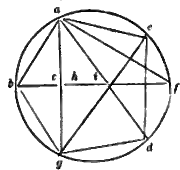
Incipit Distinctio Octaua de Quibusdam Subtilitatibus Geometricis¶
Versio Anglica: Distinctio VIII — Pentagon, Decagon & Al-Jabr (pp. 207–226) · Commentarius: Notae ad Censum Census
CIRCULI, cuius dyameter sit .10., uolo latus penthagonicum inuenire. Adiaceat circulus .abgde., et in ipso sit penthagonum equilaterum et equiangulum .abgde.; et protrahatur in ipso corda anguli penthagonici .ag., nec non et dyameter .bf.
secans cordam .ag. in duo equa ad punctum .c. Quare angulus .bca. est rectus: et proponam dyametrum .fb. 10., et latus penthagonicum .ab. rem; et protraham lineam .af.;
et erit triangulus .baf. orthogonium, cum sit in semicirculo .baf.; et est ab angulo recto in basim cathetus ducta .ac. Quare multiplicatio .fb. in .cb. est sicut .ba. in se: multiplicemus ergo .ba. in se, scilicet rem, ueniet census; quem diuidamus per .fb., scilicet per .10., ueniet pro .cb. 1/10 census: auferamus ergo quadratum 1/10 census ex quadrato lateris .ba., scilicet ex censu quadratum ex .cb., remanebit pro quadrato linee .ac. census, diminuta 1/100 census census: et quia .ag. dupla est ex .ac., erit quadratum ex .ag. quadruplum quadrati ex .ac. Quare quadruplicemus quadratum linee .ac., et habebimus .4. census minus 1/25 census census pro quadrato corde .ag.: et quia in circulo .abgd. protractum est quadrilaterum .agde., erit multiplicatio .de. in .ga. cum multiplicatione .gd. in .ea., sicut multiplicatio unius dyametrorum ipsius quadrilateri in alium; et est unus illorum dyametrorum .ge., et alter .da.; et est unusquisque eorum equalis linee .ag., cum unusquisque eorum sit corda anguli penthagonici: ergo multiplicatio .de. in .ag. cum .gd. in .ae. est sicut .ag. in se. Sed ex .ag. in se proueniunt .4. census minus 1/25 census census; ergo ex .de. in .ga., et ex .gd. in .ea. proueniunt .4. census minus 1/25 census census: de quibus si tollamus censum, qui prouenit ex .gd. in .ae., scilicet ex re in rem, remanebunt .3. census minus 1/25 census census pro multiplicatione .de. in .ag. Quare si diuiserimus .3. census minus 1/25 census census per rem, scilicet per .de., exibunt .3. res minus 1/25 cubi pro quantitate corde .ga.: multiplicemus ergo .3. res minus 1/25 cubi in se, uenient .9. census et 1/625 cubum cubi minus 6/25 census census, que equantur .4. censibus minus 1/25 census census. Addamus ergo utrique parti 6/25 census census, et tollamus ab utraque parte .4. census, remanebunt .5. census et 1/625 cubi cubi equales 5ª census census: diuidamus nunc hec omnia per censum, et uenient .5. dragme, et 1/625 census census equales 5ª census: reducamus itaque hec omnia ad censum census; et est ut multiplicemus ea per 625, et erunt census census, et 3125 dragme equales .125. censibus: multiplica ergo medietatem censuum, que est 1/2 62., in se, uenient 1/4 3906.; de quibus abice .3125., remanebunt 1/4 781.; quorum radicem abice de 1/2 62., remanebunt 1/2 62. minus radice de 1/4 781. pro quantitate census, radix quorum est res, scilicet latus penthagonicum. Aliter a dyametro .bf. accipiamus centrum .h., et addamus super semidyametrum .bh. quartam eius, que sit .hi., et erit tota .bi. 1/4 6.; et sicut in tertio decimo Euclidis demonstratum est, erit sicut .bi. ad .ic., ita .ic. ad .ih. Quare est sicut prima .bi. ad tertiam .ih., ita quadratum linee .bi. ad quadratum linee .ci.: est enim .bi. quincuplum ex .ih. Quare quadratum ex .bi., quod est 1/16 39., est quincuplum quadrati .ci. Ergo .ci. est radix de 13/16 7.; qua ablata ex .bi. remanent 1/4 6. minus radice de 13/16 7. pro quantitate linee .bc.: et quia est sicut .fb. ad .ba., ita .ba. ad .bc.; erit multiplicatio .ba. in se sicut multiplicatio .fb. in .bc.: est enim .bf. 10.; que si duxerimus in .bc., scilicet in 1/4 6. minus radice de 13/16 7.,
f. 0215 · p. 208
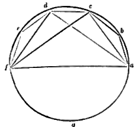

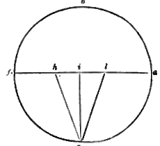
uenient pro quadrato linee .ba. 1/2 62. minus radice de 1/4 781., quorum radix est latus penthagonicum .ab., et est radix residui, quod est a radice 1/4 781. usque in 1/2 62.; quorum residuum est parum plus de 1/2 34., cuius residui, secundum propinquitatem, radix est .6. minus 1/8; et hec est quantitas .ab. secundum propinquitatem.
Et si uis habere notitiam lateris decagoni cadentis in circulo, cuius dyameter sit .10. Et diuidatur arcus semicirculj .abcf. in quinque portiones equales, que sint .ab. bc. cd. de. ef.; et protrahantur in eis recte .ab. bc. cd. de. ef., et erit unaqueque ipsarum latus decagoni; et copulentur recte .ac. et .df., et erit unaqueque ipsarum latus penthagoni; et producantur recte .ad. et .cf.: et quoniam equalis est arcus .ac. arcus .fd., comuniter adiaceat arcus .cd., erit tunc arcus .acd. equalis arcui .cdf.: quare recta .ad. equalis est recte .cf.: in circulo quidem .abg. constitutum est quadrilaterum .cafd., et in ipso protrecti (sic) sunt duo dyametri ipsius quadrilateri .cf. et .ad. Quare multiplicatio .af. in .cd. cum .ac. in .fd. est sicut .cf. in .ad.: sed .cf. in .ad. est sicut .cf. in se: his itaque intellectis, propone rectam .cd., que est latus decagoni rem, et multiplica eam in .af., scilicet in .10., uenient .10. res; quibus adde id quod prouenit ex .ca. in .df., hoc est .ca. in se; quod inuenimus superius esse 1/2 62. minus radice de 1/4 781.; erunt .10. res et dragme 1/2 62. minus radice 1/4 781., que equantur quadrato linee .cf.; cui superadde quadratum lateris .ca., quod est 1/2 62. minus radice 1/4 781., erunt .10. res et 125 dragme minus .2. radicibus de 1/4 781., que sunt una radix de 3125., que equantur .100. dragmis, scilicet quadrato dyametri .af., cum angulus .fca. sit rectus: est enim angulus .fca. in semicirculo .abf.: adde ergo utrique parti radicem de 3125., et tolle ab utraque parte .125., remanebunt .10. res equales radici .3125. minus .25. dragmis. Quare radicem .3125. minus .25. diuide per .10., et uenient radix 1/4 31. minus dragmis 1/2 2. pro quantitate rei, scilicet pro latere .cd. decagonico.
Aliter inueniam latus decagoni: et penthagoni per dyametrum notum. Sit rursus dyameter circulj .abg. 10.; et accipiatur centrum eius, quod sit .i. et ad rectos angulos trahatur recta .ig. et diuidetur .if. in duo equa ad punctum .h. et protrahatur recta .gh., cui iaceat equalis recta .hl.; et copuletur recta .gl. Dico .il. esse latus decagoni, et .gl. latus penthagoni cadentium in circulo .abfg. Quod sic probatur: Quoniam recta .fi. diuisa est in duo equa in puncto .h., et .ei. addita est recta .il., erit multiplicatio .il. in .fl. cum quadrato linee .hi. in se sicut .hl. in se. Sed recte .hl. equalis est recta .gh.; ergo .li. in .fl. cum .hi. in se est sicut .hg. in se. Sed .hg. in se est sicut .gi. in se et .ih. in se; ergo .il. in .fl. cum quadrato linee .hi. est sicut quadrata linearum .gi. et .ih.: comuniter auferatur quadratum linee .ih., remanebit .il. in .fl. sicut quadratum linee .gi. Sed recte .gi. equalis est recta .fi.; ergo superficies .il. in .fl. est sicut .fi. in se. Quare proportionaliter est ut .lf. ad .fi., ita .fi. ad .il.: linea ergo .fl. diuisa est media et extrema proportione; et est maior pars, scilicet .fi. latus scilicet exagonicum. Quare minor pars .il. erit latus decagonicum, ut in Evclide habetur: et quia latus penthagonicum potest super latus exagoni et decagoni; et est .g.i. latus exagonicum., et .il. latus decagonicum, erit quippe recta .gl. latus penthagonicum. Et ut hec operentur in numeris, sit dyameter .af. 10.; quare .gi. erit .5. et .ih. erit 1/2 2.; et ducamus .gi. in se, et .ih. in se,
f. 0216 · p. 209
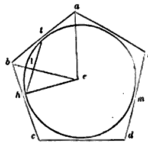

uenient .25. et 1/4 6.; quibus insimul iunctis, erunt 1/4 31. pro quadrato linee .gh., hoc est pro quadrato linee .hl. Quare recta .hl. est radix de 1/4 31.: de qua si auferatur linea .hi., que est 1/2 2., remanebit pro linea .il., scilicet pro latere decagoni, radix 1/4 31. minus 1/2 2., ut superius inuenimus. Et si multiplicauerimus .il. in se, et .gi. in se, uenient 1/2 62. minus radice 1/4 781. pro linea .gl., scilicet pro latere penthagoni, ut supra diximus.
Et quando uolueris scire latus penthagoni circundantis circulum scitum, fac circulum scitum .thm., et pone dyametrum eius .10.; circundet ipsum circulum penthagonus .abcdf.; et a centro .e. copulentur recte .ea. et .eb. eh.; et protrahatur corda .th., que est corda penthagoni cadentis in ipso circulo; et est secta in duo equa a linea .e.b.; et anguli qui ad .l. sunt recti; et est quadratum totius corde .th. 1/2 62. minus radice 1/4 781. Quare quadratum medietatis corde .th., scilicet ex .tl., est quarta pars, que est 5/8 15 minus radice 5/8 6/8 48.; quod quadratum si auferatur ex quadrato semidyametri .et., quod est 25., remanebunt 3/8 9., et radix 5/8 6/8 48. pro quadrato linee .el.: et quia triangulus .eta. similis est triangulo .etl., cum ambo sint recti anguli; et cum anguli .aet. et .tel. sint equales, erit proportio .at. ad .te. sicut proportio .tl. ad .le. Est enim .ab. duplum ex .at., et .th. ex .tl. Quare est sicut .ab. prima ad .te. secundam, ita .th. tertia ad .le. quartam. Quare multiplicatio .ab. in .el. est sicut multiplicatio .te. in .th. Pone igitur latus .ab. rem, et duc quadratum eius, quod est census, in quadratum ex .el., scilicet in 3/8 9., et in radicem 5/8 6/8 48., uenient census 3/8 9., et radix census census 5/8 6/8 48., que equantur ei quod prouenit ex quadrato semidyametri .te., quod est 25., in quadratum corde .th., quod est 1/2 62. minus radice 1/4 781; ex qua multiplicatione proueniunt 1/2 1562 minus radice 1/4 488281.: reduc totum quod habes ad censum, quod est ac ducas totum quod habes in 6/25 dragme, diminuta radice 4/125 dragme: et ex ductis 6/25 et minus radice 4/125 in census 3/8 9., et in radicem censuum census 5/8 6/8 48., uenient census: de inde duc 1/2 1562., diminuta radice 1/4 488281. in 6/25, et in radicem 4/125 dragme proueniunt 375 dragme, et radix .15625. dragmarum, et minus radice 78125 dragme, et diminuta radice 28125 dragme; et hec omnia facio 500. minus radice .200000.; ergo census equatur .500. minus radice 200000., quorum radix est linea .ab., que est unum ex lateribus penthagoni circundantis circulum, cuius dyameter est .10. Aliter prontius: quia in orthogonio trigono .etb. ab angulo recto producta est cathetus .tl., erit proportio quadrati .be. ad quadratum .et. sicut quadratum .et. ad quadratum .el. Quare multiplicatio quadrati .be. in quadratum .el. est sicut multiplicatio quadrati .et. in se, quod est .625. Quare ponam .be. rem, et ducam eam in se, exibit census; quem ducam in quadratum .el., quod est 3/8 9., et radix 5/8 6/8 48., uenient census 3/8 9., et radix 5/8 6/8 48. censuum census, que equantur 625. dragme. Reduc hec ad censum, hoc est 625 per 6/25 dragme, diminuta radice 4/125, uenient .150. minus radice .12500., que equantur censui, hoc est quadrato .be.: de quo si auferatur quadratum .et., quod est .25., remanebunt pro quadrato .tb. 125. minus radice 12500.; quorum quadruplum, quod est .500., minus radice 200000., est quadratum totius ab., ut superius inuentum est. Et si uis inuenire mensuram lateris decagoni circundantis circulum, cuius dyameter sit .10., super circulum .def., cuius dyameter sit .10., describantur duo latera decagoni circundantis ipsum .ab. et .bg., et contingentia circulum
f. 0217 · p. 210
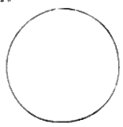

.def. in punctis .d.e.; et copulentur recte .dc. et .ha. et .hb. et .et. hd. et .ha.; et sit .h. centrum circulj; et erit per ea que dicta sunt in superiori figura, sicut .ab. ad .dh., ita .de. ad .hl. Vnde multiplicatio quadrati, et quadratum .ab. in .hl. est sicut multiplicatio quadrati; et quadratum .de. in .dh. etiam est corda .de. latus decagoni cadentis in circulo .def., cuius mensuram inuenimus esse radicem 1/4 31. minus 1/2 2. : quare medietas eius est radix 13/16 7. minus 1/2 1., cuius quadratum est 3/8 9 minus radice 5/8 6/8 48.: que si auferantur ex quadrato .dh., quod est 25., remanebunt pro quadrato .hl. 5/8 15., et radix 5/8 6/8 48.: quod quadratum si multiplicaueris in quadratum .ab., quod sit census, uenient census 5/8 15., et radix censuum census 5/8 6/8 48., que equantur multiplicationi quadrati .dh., quod est .25., in quadratum .dl., quod est 3/8 9 minus radice 5/8 6/8 48.; que multiplicatio est 1/2 937. minus radice 1/4 48828.: reduc igitur hec omnia ad censum, quod est ut multiplices ea per 2/25 minus radice 4/3125: ex ductu quidem 2/25 minus radice 4/3125 in census 5/8 15., et in radicem censuum census 5/8 6/8 48., ueniet census: et duc 1/2 937 minus radice 1/4 48828. in 2/25 minus radice 4/3125, et erit census equalis .75., et radici .625. dragmarum minus radice .3125. dragme, et minus radice .1125. dragme; quod totum est .100. minus radice .8000., quorum radix est latus .ab., quod est unum ex lateribus decagoni circundantis circulum, cuius dyameter est .10.
Aliter fac .hb. rem, et duc eam in se, et ueniet census; quem multiplica per quadratum .hl., quod est 5/8 15, et radix 5/8 6/8 48., uenient census 5/8 15., et radix censuum census 5/8 6/8 48., que equantur quadrato .dh. ducto in se, scilicet .625. dragmis: multiplica igitur hec omnia per 2/25, minus radice 4/3125, erit census equalis .50. minus radice .500. dragme; et hoc est quadratum linee .hb.: de quo si auferatur quadratum .hd., quod est .25., remanebunt pro quadrato linee .db. 25. minus radice .500.; quorum quadruplum, quod est .100., minus radice .8000., est quadratum linee .ab., ut superius inuenimus.
Et postquam demonstratum est per notitiam dyametri inuenire latera penthagoni et decagoni cadentia infra circulum et extra. Restat ut per eadem latera, cum fuerint nota, doceatur inuenire longitudinem dyametri: ut si dicamus: corda quinte circulj est .10., quanta est longitudo dyametri. Pone penthagonum .abgde. habens unoquoque laterum .10. ex numeris; et circunda ipsum a circulo, cuius dyameter sit linea .dc.; et copulentur recte .ge. et .eb. et .bd.; et erit quadrilaterum .ebgd. in circulo .abgd. Quare multiplicatio .eb. in .dg. cum .gb. in .de. est sicut multiplicatio .eg. in .db., hoc est sicut .eg. in se. Quare pone rectam .eb. rem, et duc eam in .dg., uenient .10. res; quibus adde multiplicationem .bg. in .de., que est .100., erunt .100. et 10. res equales multiplicationi .eg. in se; et est .eg. res, cum sit equalis .eb.; ergo .100. et 10. res equantur censui; quare res est radix 125. et 5. dragme; et hec est longitudo linee .ge., quorum medietas erit .gl.; et hec est radix de 1/4 31., et dragme 1/2 2.: multiplica ea in se, erunt 1/2 37., et radix de 1/4 781.; que extrahe ex ducto .gd. in se, scilicet ex .100., remanebunt 1/2 62. minus radice de 1/4 781. pro quadrato linee .dl. Vnde si multiplicauerimus .cd. in .dl., erit sicut multiplicatio .de. in se, cum in triangulo .ced. ab angulo recto in basim cathetus ducta sit .el. Vnde si posuerimus dyametrum .cd. rem, et multiplicauerimus quadratum eius, quod est census, in quadratum linee .dl., uenient census 1/2 62. minus radice censuum census 1/4 781., que equantur quadrato multiplicationis .de. in se, scilicet .10000. dragmis: ad quam etiam equationem possumus
f. 0218 · p. 211
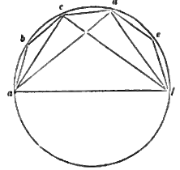

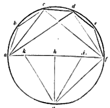
aliter peruenire. Videlicet cum circulo, cuius dyameter est .10., latus penthagoni cadentis in ipso sit radix 1/2 62. minus radice 1/4 781.; et uolo latus penthagoni esse .10.; et ex hoc queratur notitia dyametri; erit proportio 1/2 62. minus radice 1/4 781. ad quadratum sui dyametri, scilicet ad .100., sicut proportio quadrati lateris dati penthagoni, quod est .100., ad quadratum sui dyametri ingnoti. Quare si posuerimus ipsum dyametrum ingnotum rem, et multiplicauerimus quadratum eius, quod est census, per 1/2 62. minus radice 1/4 781., uenient similiter census 1/2 62. minus radice censuum census 1/4 781., que equantur multiplicationi de .100. in .100., hoc est .10000. dragmis, ut superius inuenimus. Vnde si hec ad unum censum reduxeris, quod est ut multiplices omnia que habes per 1/50, et per radicem 1/12500 unius dragme, uenient .200., et radix .8000. pro quadrato dyametri .cd. Quare radix eorum, que est circa .17., erit dyameter .dc. quesitus.
Aliter quia corda anguli penthagonici, et corda quinte circulj possunt quincuplum lateris exagoni, scilicet medietatis dyametri, ut in quarto decimo EVCLIDIS habetur; multiplica .eg. in se, que est radix 125. et 5. dragme, uenient .150. et radix .12500.; quibus adde quadratum lateris .gd., quod est .100., erunt .250. et radix .12500., que sunt quincuplum quadrati semidyametri; quare accipe quintam partem eorum, uenient .50. et radix .500. pro quadrato medietatis dyametri; quadruplum uero eorum, scilicet .200. et radix .8000. erit quadratum dyametri, ut superius inuentum est. Item si uis inuenire dyametrum circulj, cuius 1/10 corda sit .10. ex numeris; quia erit proportio ipsius corde ad dyametrum circulj ipsius, sicut proportio alicuius similis corde ad suum dyametrum; et est corda decagoni radix 1/4 31. minus 1/2 2. circulj, cuius dyameter est .10.; si pones ipsum dyametrum incognitum rem, et multiplicabis eam in radicem 1/4 31., minus 1/2 2., ueniet radix census 1/4 31. minus rebus 1/2 2., que equantur .100., que proueniunt ex multiplicatione notę cordę, que est .10., in dyametrum notum: adde utrique parti res 1/2 2., erunt .100. et res 1/2 2. equales radici censuum 1/4 31.: multiplica hec omnia in se, et erunt census 1/4 31. equales censibus 1/4 6. et 10000. dragmis, diminutis inde 500 radicibus: tolle ab utraque parte census 1/4 6., et adde utrique parti .500. res, erunt census .25., et 500 res equales .10000. dragmis. Redige ergo hec omnia ad censum, quod est ut diuides omnia que habes per .25., et ueniet census, et 20. res equales .400. dragmis: age in his secundum algebram, et erit res radix .500. dragmarum, et 10 ex numeris; et hec est longitudo dyametri quesiti. Aliter adiaceat factus circulus .abcdefg.; et in medietate ipsius protrahantur .5. corde equales, que sint recte .ab. bc. cd. de. ef.; et erit unaqueque ipsarum corda 1/10 circulj .acg.; et dyameter circuli sit .af.; et a terminis ipsius producantur recte .ac. et .fd., quarum unaqueque est latus penthagoni cadentis in ipso circulo, cum unaqueque ipsarum subtendat angulum decagonicum: et protrahantur etiam recte .ad. et .cf.; et sit unaqueque corda decagoni .10. ex numeris; et ponam dyametrum .af. duas res; et multiplicabo eas in corda .cd., que est .10., et uenient .20. res; et multiplicabo lineam .ac. in lineam .fd., hoc est latus penthagonicum in se, uenient census, et 100 dragme: et hoc dico quia latus penthagonicum potest super latus exagonicum et decagonicum: et hic est latus exagonicum res: et eius potentia census: et latus decagonicum est .10., et eius potentia .100.: et adde censum et .100. cum .20. rebus, erunt census et 100. et 20. res, que proueniunt ex .af. in .cd., et ex .ac. in .fd.; et hec equantur multiplicationi .ad.
f. 0219 · p. 212
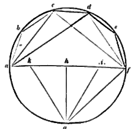

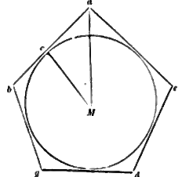
in .cf., hoc est quadrato linee .cf.; cui quadrato si addatur quadratum linee .ac., quod est census et .100., habebuntur siquidem .2. census, et .20. res, et .200. dragme, que equantur .4. censibus, scilicet quadrato dyametri: abice ergo ab utraque parte .2. census, et reliquum dimidia, ueniet census equalis .10. rebus, et .100. dragmis: age in his secundum algebram, et erit res, scilicet medietas dyametri .af., radix .125., et .5. dragme, quorum duplum, scilicet radix .500., et .10. dragme, erit longitudo dyametri quesiti, ut superius inuenimus. Aliter in eodem circulo a centro .h. super dyametrum .af. super rectos angulos protraham lineam .gh.; et ponam .hi. medietatem ex .fh., et copulabo .gi.; et ponam .ik. equalem .gi., et copulabo .gk., et erit .gk. latus penthagonicum in circulo .a.c.f., secundum quod superius demonstratum est; et .hk. erit latus decagoni, et .gh. erit latus exagonicum: et ponam .gh. rem. Quare .ih. erit medietas rei: et ducam .gh. in se, et ueniet census; et .ih. in se, et ueniet quarta census; et sic pro quadrato linee .gi., hoc est pro quadrato linee .ik., habetur census 1/4 1.; ergo .ik. est radix unius census et 1/4; ex qua si auferatur .ih., remanebit .hk. radix census 1/4 1 minus 1/2 radix, hec est .hi., que equantur .10. dragmis, cum latus decagonicum ponatur esse .10. Vnde si addatur 1/2 rei utrique parti, erit radix census 1/4 1 equalis .10., et medietati rei: que omnia si multiplicemus in se, erit census 1/4 1. equalis .10. rebus et .100. dragmis, et 1/4 census. Vnde si ab utraque parte tollatur 1/4 census, remanebit census equalis .100. et .10. rebus; et sic res, que est medietas dyametri circulj .adg., erit .5., et radix de .125. dragmis; quorum duplum, scilicet .10. et radix .500. dragmarum, est longitudo dyametri .af.: et ex hoc modo inuenitur quod omnis dyameter cuiuscumque circulj addit super latus decagonicum cadentis in ipso radicem quincupli quadrati lateris decagonici: ut si latus decagonicum fuerit .6., erit dyameter circulj similiter .6., et radix quincupli quadrati senarij, que radix est de .180.; et ita intelligas in omnibus similibus euenire. Possumus etiam per hanc figuram per latus penthagoni dyametrum circulj inuenire. Verbi gratia: quod eiusdem circulj .agd. est latus penthagoni cadentis in ipso recta .gk., quam ponamus esse .10.; et quadratum eius, quod est .100., equatur duobus quadratis linearum .gh. et .hk.; et est .gh. semidyameter; et latus .hk. est corda 1/10 circulj. Ponamus lineam .gh. rem, et ducamus eam in se, et ueniet census: et ducamus .hk. in se, que est radix census 1/4 1. minus 1/2 rei, ueniet census 1/2 1. minus radice censuum census 1/4 1.; que adde cum censu, scilicet cum quadrato lineę .gh., uenient census 1/2 2 minus radice census census 1/4 1., que equantur .100. dragmis. Reduc hec omnia ad censum, quod est ut multiplices omnia que habes per 2/5, et per radicem 1/20 dragmę, uenient .50., et radix .500. dragmarum equales censui, hoc est quadrato medietatis dyametri; quorum quadruplum, scilicet .200., et radix .8000. erit longitudo dyametri. Et nota quia cum in quolibet circulo latus penthagonicum fuerit notum, si quadratum ipsius lateris multiplicabitur per 2/5, et per radicem 1/20 unius dragmę: et illud quod prouenerit est quadratum medietatis dyametri.
Et si uis habere notitiam dyametri circulj circundati á penthagono equilatero et equiangulo .abgde., cuius quodlibet latus est .10. ex numero, et centrum circulj .m., et medietas dyametri circulj continentis penthagonum linea .am., quod est 1/4 dyametri eius .50., et radix .500., prohice ex eo quadratum .ac., quod est .25., remanebunt
f. 0220 · p. 213
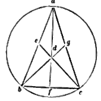


pro quadrato .cm. .25., et radix .500.; quorum quadruplum, quod est .100., et radix .8000. est quadratum dyametri circulj contencti á penthagono .abcde. Et si uolueris ex quadrato dyametri continentis penthagonum, quod est .20., et radix .8000. penthagoni, remanebunt similiter .100., et radix .8000. pro quadrato quesiti dyametri. Quia quadratum omnis dyametri circulj continentis figuram equilateram et equiangulam equatur quadrato lateris ipsius figurę: et quadrato dyametri circulj contencti ab ipsa figura. Et ad hoc demonstrandum adiaceat circulus .abc.; et in ipso scribatur triangulus .abc. equilaterus et equiangulus; et á centro .d. protrahantur recte .da. db. dc.; et diuidantur latera trianguli in duo equa in punctis .e.f.g.; et producantur á centro recte .de.df.dg.; et erit unaqueque ipsarum cathetus super latera trianguli .abc., et equabuntur sibi inuicem; nec non et recte .da.db.dc. sibi inuicem sunt equales; et est unaqueque ipsarum semidyameter circulj .abc.: et quia recte .de.df.dg. sibi inuicem sunt equales, est unaqueque ipsarum semidyameter circulj circundati á triangulo .abc.: et quia quadrata linearum .de. et .eb. equantur quadrato lineę .db., quadruplum quadratorum .de. et .eb. equatur quadruplo quadrati .db. Sed quadruplum quadrati .de. est quadratum dupli .de., hoc dyametri circundati á triangulo .abc.; nec non et quadruplum quadrati lineę .eb. est quadratum lineę .ab.; et quadruplum quadrati semidyametri .db. est quadratum dyametri circulj .abc. continentis triangulum .abc.; ergo quadratum dyametri circulj circundati á figura triangula et equilatera cum quadrato lateris trianguli circundantis ipsum circulum equatur quadrato dyametri circulj circundantis ipsum triangulum. Et ita esse ostendetur ex qualibet figura multilatera et equilatera et equiangula circundante circulum, et circundata á circulo; et hoc est quod uolui demonstrare. Rursus si habere uis notitiam dyametri circulj circundati á decagono equilatero et equiangulo, cum dyameter circulj circundantis ipsum decagonum sit radix .500. et 10.; si multiplicauerimus ipsum in se, et ex ipsa multiplicatione extraxerimus quadratum lateris decagoni, quod est .100., remanebunt .500., et radix .200000. pro quadrato dyametri quesiti. Et si dicemus tibi: trianguli equilateri cum sua perpendiculari est .10. ex numeris; et queratur quanta sit perpendicularis, faciamus triangulum .abg., cuius perpendicularis .ad. cum triangulo .abg. sit .10.; et uis scire quanta est .ad., pone ipsam rem, et erit .db. radix 1/3 census; et unaqueque linearum .ab. bg. ag. erit radix census 1/3 1. Vnde si multiplicauerimus .ad. in .db., scilicet in radicem 1/3 census, ueniet pro triangulo .abg. radix 1/3 census census; cui si addatur perpendicularis .ad., erit res et Radix 1/3 census census equalis .10. dragmis: restaura radicem 1/3 census census, ut sit radix census census, quod est ut multiplices illud in radicem .3.: ergo multiplica totum quod habes in radicem .3., et ueniet radix census census, que est census, et radix .3. censuum, et quales (sic) radici .300.: dimidia igitur radicem .3. censuum, et exibit radix 3/4; quam duc in se, et proueniunt 3/4; quos adde ad radicem .300., erunt 3/4, et radix .300.; quorum accipe radicem, et prohice 3/4, et residuum est linea .ad., que est perpendicularis trianguli .abg.; et hoc est quod uoluimus exponere.
In quadrato quidem equilatero et equiangulo .abgd., cuius unumquodque latus est .10., protractum est penthagonum .acefh. equilaterum. Volo scire longitudinem uniuscuiusque lateris penthagoni. Ponam pro uno quoque ipsorum rem, remanebit unaqueque
f. 0221 · p. 214
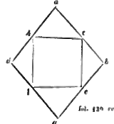

rectarum .hd. et .cb. 10., minus re: et quia latera .ce. et .hf. sunt equalia, erunt quadrata linearum .cb. et .be. equalia quadratis linearum .hd. et .df. Sed .cb. equalis est .hd., remanebit .be. equalis .fd.; relique .eg. et .gf. sibi inuicem equales erunt, cum latera .bg. et .gd. sunt equalia; et quia .ef. est res; si ducatur in se, producit censum. Vnde unaqueque rectarum .eg. et .gf. est radix 1/2 census; remanet ergo pro .df. 10. minus radice medietatis census; ducamus eam in se, uenient .100. et 1/2 census minus radice .200. censuum: et duc etiam .dh. in se, que est .10. minus re, uenient .100. et census minus .20. rebus; aggrega hec omnia, et erunt 200 et census 1/2 1., minus 20. rebus, et minus radice .200. censuum, que equantur censui, scilicet quadrato lineę .hf.: adde utrique parti .20. res, et radicem .200. censuum; et abice ab utraque parte censuum, remanebunt .200. et 1/2 census equales 20. rebus, et radici .200. censuum: reduc hec omnia ad censum, quod est ut duplices omnia que habes, et erunt census et 400. equales 40 rebus, et radici .800. censuum: dimidia ergo radices, que sunt .20., et radix .200.; et duc eas in se, uenient .600., et radix .320000.; de quibus abice .400., remanebunt .200., et radix 320000; quorum radicem extrahe de .20., et de radice .200., residuum erit res, scilicet latus penthagoni.
Penthagoni equilateri et equianguli mensura est .50. dragme, quantum est quodlibet latus eius: pro ipso quidem penthagono ponam penthagonum .abgde., et .c. centrum circulj circundantis penthagonum; et protraham ab ipso centro lineas .ca. cb. cg. cd. ce., et erit totus penthagonus .abgde. diuisus in quinque triangulis equalibus: ex quibus unus est triangulus .ace., cuius mensura est .10. Et iam scis quod quando latus penthagoni est .10., quod quadratum dyametri circulj circundantis ipsum penthagonum est .200., et radix .8000. Quod etiam potest haberi ex duplo quadrati lateris penthagoni, et ex radice 4/5 in quadrato eiusdem lateris. Vnde si ponamus latus penthagoni rem, uenient pro quadrato dyametri circulj circundantis penthagonum .2. census, et radix 4/5 censuum census; cuius dyametri medietas est unaqueque linearum .ca. et .ce.; et est quadratum uniuscuiusque earum quarta pars quadrati dicti dyametri; ergo quadratum lineę .ca. est 1/2 census, et radix 1/20 census census: de quo si auferamus quadratum lineę .af., quod est 1/4 census, remanebunt pro quadrato perpendicularis .cf. quarta census, et radix 1/20 census census: cadit enim perpendicularis super medium basis .ae., cum equalia sint latera .ac. et .ce.: multiplica ergo quadratum .cf. in quadratum .fa., hoc est 1/4 census, et radix 1/20 census census per 1/4 census, uenient 1/16 census census, et radix 1/320 census census census, que equantur quadrato trianguli .ace., quod est .100. Restaura ergo 1/16 census census, ubi sit census census, quod est ut ducas eum in .16.; et propter hoc duc omnia que habes in .16., et uenient census census, et radix 4/5 census census census, que equantur .1600. Reduc totum quod habes ad censum census; et est ut ducas totum quod habes in .5., diminuta radice .20., et prouenit census census equalis .8000., et radici .51200000.; radix eius est quodlibet latus penthagoni.
Et si dicemus tibi: mensura decagoni equilateri et equianguli est .100., quanta est longitudo cuiuslibet lateris. Intelligamus, lineam .bg. esse unum ex lateribus ipsius decagoni, et .a. centrum circulj circundantis ipsum. Quare unaqueque linearum .ab. et .ag. est semidyameter ipsius circulj; et est triangulus .abg. 10.; quia est 1/10 totius decagoni.
f. 0222 · p. 215

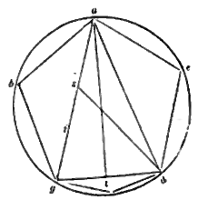

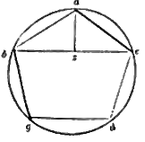
Et iam scis quod quando latus decagoni est .10., quod dyameter circulj circundantis decagonum est .10. et radix .500. Vnde medietas eius est .5., et radix .125. Similiter cum ponamus latus .bg. rem, erit dyameter circulj similiter res, et radix .5. censuum, hoc est radix quincupli quadrati rei. Vnde semidyameter .ab. erit 1/2 rei, et radix census 1/4 1.: protrahe tunc cathetum .ad., et ueniet punctus .d. in medio .bg.; quare .bd. erit medietas rei: duc ergo .ab. in se, que est 1/2 rei, et radix census 1/4 1., ueniet census 1/2 1, et radix census census 1/4 1.: quibus abice quadratum lineę .bd., quod 1/4 census, remanebunt pro catheto .ad. census 1/4 1, et radix census census 1/4 1; que multiplica in quadratum lineę .bd., quod est 1/4 census, uenient 5/16 census census, et radix 5/64 census census census census, que equantur .100., scilicet quadrato trianguli .abg.: restaura 5/16 census census, ut sit census census; quod est ut multiplices illud per 1/5 3.; et ideo multiplica omnia que habes per 1/5 3., erunt census census, et radix 4/5 census census census census, que equantur 320. Reduc ergo hec omnia ad censum census, quod est ut multiplices omnia que habes per .5. minus radice de 20., et erit census census equalis .1600. minus radice 2048000.: de quorum radice si acceperis radicem, ueniet res, scilicet latus decagoni quesiti. Potes etiam lineam .ab., cum sit latus exagoni, aliter inuenire, uidelicet cum diuiditur latus exagonicum media et extrema proportione, tunc maior pars eius erit latus decagonicum, ut in Evclide habetur; et latus decagonicum est linea .bg.: unde si ab .ab. abscidamus equalem lineę .bd., que sit linea .eb., erit quadratum lineę .ae. quincuplum quadrati lineę .eb., ut in eodem Evclide habetur. Sed quadratum lineę .eb. est 1/4 census, cum sit 1/2 rei; quia ponimus lineam .bg. rem; ergo quadratum lineę .ae. erit census 1/4 1.: et sic tota linea .ab. erit 1/2 rei, et radix census 1/4 1, ut superius inuenctum est.
Et si dicemus tibi: penthagoni .abgde. mensura trianguli .agd. est .10.; et uis scire quanta est longitudo lineę .gd., que est unum ex lateribus penthagoni; quam pone rem; et quia linea .ag. est corda anguli penthagonici, scilicet lineę .gd., est corda anguli decagonici. Vnde si á linea .ag. abscidamus lineam .gz. equalem lineę .gd., erit proportio .ag. ad .gz. sicut .gz. ad .za.; et si diuiserimus .gz. in duo equa in puncto .i., erit quadratum lineę .ai. quincuplum quadrati lineę .gi.; et est .gi. medietas rei, et quadratum eius 1/4 census: quare linea .ai. erit radix .5. quarturum census, hoc est ex censu 1/4 1.; et tota linea .ai. erit radix census 1/4 1. et 1/2 rei: de inde protrahe cathetum .at., qui cadit in medio recte .gd.; et quia triangulus .agd. habet latera .ag. et .ad. lateribus superioribus trianguli .abg., qui fuit decima pars supradicti decagoni; et ambo trianguli habent bases equales, quarum unaqueque est res; si processerimus in hoc triangulo secundum quod egressi sumus in illo, inueniemus similiter censum census equalem esse .1600. dragmis minus radice 2048000. Quare radix radicis huius census est latus .gd., quod posuimus esse rem.
Et si dicemus: mensuram trianguli .abe., qui est ex penthagono .abgde. est .10., quanta est longitudo lineę .be. Pone rem lineam .be., que est subtendens angulum penthagoni; et protrahe cathetum .az., que diuidit lineam .be. in duo equa; et quando linea .be. diuiditur media et extrema proportione, maior eius pars est equalis lateri penthagonico, ut in Evclide habetur: in quo etiam inuenitur quod quando linea aliqua media et extrema proportione diuiditur, et additur maiori parti medietatem lineę
f. 0223 · p. 216
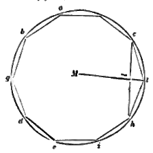

diuise, quadratum additę lineę erit quincuplum quadrati medietatis ipsius diuisę lineę: et quia quando linea .be. diuisa est media et extrema proportione, maior eius pars est linea .ab., que est latus penthagonicum; si ei adiungatur linea .bz., que est medietas lineę .be.; itaque ex utraque fiat una linea; erit quadratum ipsius lineę coniunctę ex .ab. et .bz. quincuplum quadrati lineę .ze.; et .ze. est 1/2 rei, et quadratum eius 1/4 census lineę coniunctę ex .ab. et .bz. Vnde si ex radice ipsius auferatur linea .bz., remanebit pro linea .ab. radix census 1/4 1. minus 1/2 rei: quam duc in se, uenient census 1/2 1. minus radice census census 1/4 1.: abice inde quadratum lineę .bz., quod est 1/4 census, remanebit pro quadrato lineę .az. census 1/4 1 minus radice census census 1/4 1.; quod multiplica per quadratum lineę .bz., quod est 1/4 census, uenient 5/16 census census minus radice 5/64 census census census census, que equantur quadrato trianguli .abe., quod est .100.: multiplica quidem hec omnia per 1/5 3., ueniet census census minus radice 4/5 census census census census, qui equantur .320. dragmis: redige hec omnia ad censum census; quod est ut multiplices totum quod habes per .5., et per radicem de .20., ueniet census census equalis dragmis .1600., et radici .2048000., quorum radix erit quadratum lineę .be.
Et si dicemus tibi decagoni .abgdeihtc. equilateri et equianguli mensuram trianguli .cth. est .10. ex numero, quanta est linea .ch., que est corda 2/5 circundantis ipsum decagonum. Esto centrum ipsius circulj .m.; et ducatur linea .tm., que diuidit lineam .ch. in duo equa in puncto .l.; et ponam .ch. rem; et quando .ch. est res; ergo eius quadratum est census, et quadratum dyametri ipsius circulj est .2. census, et radix 4/5 census census; et quadratum medietatis dyametri, scilicet lineę .mt., est 1/2 census minus radice 1/20 census census: et quia latus penthagoni .ch. potest super latera .ta. et .te., hoc est super latera exagonici et decagonici: et posuimus .ch. rem; et quadratum eius est census; ergo quadrata linearum .mt. et .tc. equantur censui: unde si ex censu auferatur quadratum lineę .tm., quod est 1/2 census, et radix 1/20 census census, remanebit pro quadrato lineę .tc. 1/2 census minus radice 1/20 census census: de quo si auferatur quadratum lineę .cl., quod est 1/4 census, remanebit pro quadrato lineę .tl. 1/4 census minus radice 1/20 census census: quod si ducatur in quadratum .cl., scilicet in 1/4 census, ueniet 1/16 census census, et radix 1/320 census census census census, que equantur .100. dragmis. Restaura 1/16 census census, ubi sit census census; quod est ut multiplices illud per .16.; et propter hoc multiplica omnia que habes per .16., et erit census census minus radice 4/5 census census census census equalis .1600. dragmis. Reduc ergo hec omnia ad censum census; quod est ut multiplices omnia que habes per .5., et per radicem de .20., deueniet census census equalis 8000, et radici 51200000, quorum radix radicis est linea .ch.; et hoc uolui inuenire.
Expliciunt questiones geometricales: et incipiunt questiones, quorum solutiones non sunt terminate, hoc est quod non cadunt ad unum terminum tantum, sed ad plures.
Vt est ista in qua proponitur inuenire aliquis quadratus numerus, cui si addatur .5., proueniat inde quadratus numerus; et hoc potest fieri multipliciter. Pones pro radice maioris numeri rem, et aliquot dragmas; que cum in se multiplicate fuerint, faciant minorem numerum quam .5.; et sit dragma: et multiplicentur res et dragme
f. 0224 · p. 217in se, ueniet census, et 2 res, et dragma una, que equantur censui, et 5. dragmis: abice ab utraque parte censum, et dragmam, remanebunt .2. res equales .4. dragmis; ergo res est .2. dragmarum; et quadratum eius est .4. quesitus numerus: cui si addatur .5., ueniet .9.; qui numerus quadratus est; et radix eius est .3. Et si ponamus cum re dragmas duas, multiplicemus ea in se, exibit census, et .4. res, et .4. dragme equales censui, et .5. dragmis: proiciamus ab utraque parte censum, et .4., remanebunt .4. res equales uni dragme; quare res est 1/4 dragmę; qua in se multiplicata facit 1/16 unius dragmę pro quesito numero: cui si addantur .5., uenient 1/16 5.; qui numerus quadratus est; et radix eius est 1/4 2. Aliter pone pro ipso quadratum numerum quadratum .ag.; et addatur ei superficies .de., que sit .5.; et iaceat linea .ge. in directo lineę .bg.; et erit numerus superficialis numerus .ae., et prouenit ex .ab. in .be.: et proponitur numerus .ae. esse quadratus; quare numeri .ab. et .be. similes superficiales sunt; hoc est quod proportio numeri .eb. ad numerum .ab. ae., sicut quadratus numerus ad quadratum numerum. Vnde possumus infinitos duos numeros inuenire habentes inter se proportionem sicut quadratus numerus ad quadratum numerum, cum quibus poterimus ad propositum deuenire. Quare ponamus proportionem numeri .eb. ad numerum .ba., hoc est ad numerum .gb., esse sicut .4. Quare proportio .eg. ad .gb. erit sicut .5. ad .4.; et est proportio superficiei .de. ad quadratum .db. sicut .eg. recta ad rectam .gb.: ergo superficies .de. ad quadratum .db. est sicut .5. ad .4.: unde si superficies .de. est .5., et quadratum .db. est .4.; ergo quesitus quadratus numerus est .4.: cui si addatur .5., ueniunt .9., qui etiam quadratus est. Et nota quod proportio superficiei .de., que est .5., ad quadratum .db. oportet esse sicut aliquis quadratus numerus, cuius quinta pars sit quadrata ad alium quemlibet quadratum numerum. Verbi gratia: sit proportio .eb. ad .bg. sicut est .5. ad .1.; erit ergo proportio .de., que est .5., ad .db. sicut .80. ad .1.; de quibus .80. sextadecima pars. Vnde quadratum .db. est 1/16 de .1., cuius radix est 1/4, quod habetur pro latere .gb.; et sic tota superficies .ae. erit 1/16 5., cuius radix est 1/4 2., ut superius inuenctum est. Aliter quia omnes quadrati numeri ordinate proueniunt ex aggregatione ipsorum numerorum ab unitate ascendentium per ordinem; si colligamus impares numeros, qui sunt infra .5., scilicet .1. et .3., procreabuntur inde .4.; qui numerus quadratus est: cui si addantur .5., uenient .9., qui est quadratus numerus: et si multiplicauerimus aliquem imparem quadratum numerum, ut dicamus .9., per .5., uenient .45.; et acceperimus quadratum, qui prouenit ex aggregatione omnium numerorum imparium, qui sunt ab uno usque in .43., hoc est qui sunt infra .45.; qui quadratus numerus est .484., et eius radix est .22.; et super ipsum quadratum addiderimus .45., nimirum in quadratum numerum .529. ueniemus: et quia ita est, si diuiserimus utrumque quadratum numerum per ipsum quadratum numerum, per quem multiplicauimus .5., nimirum duo quadrati numeri ex ipsa diuisione prouenerint, quorum unus excedit alterum in .5., ut quesitum est; et erit unus ipsorum quadratorum 7/9 53., et alter 7/9 58.: et si uis habere radices eorum, diuide radicem de .9., uenient 1/3 7. Similiter si multiplicauerimus .5. per aliquem quadratum parem in duas, uel in quatuor, uel in plures partes, ita quod unaqueque pars sit impar; et iaceant ipse partes impares in ordine imparium numerorum, poterimus ad solutionem suprascriptę questionis deuenire. Verbi gratia: multiplicemus .5.
f. 0225 · p. 218
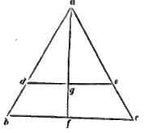

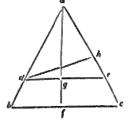
per .16., uenient .80.; et diuidamus .80. in duos pares numeros, qui sint continui in ordine imparium numerorum, eruntque .39. et .41.: deinde aggrega omnes impares numeros ab unitate, qui sunt infra .39.; quam aggregationem habebis, si multiplicauerimus in se medietatem duorum extremorum, scilicet de .1. et 37.; de qua multiplicatione exhibit .361.: cum quibus si addiderimus .80., uenient .441.: si diuiserimus hos duos quadratos per .10., habebimus 9/16 22. et 9/16 27., et radices eorum habebimus, si per radicem de .10., que est .4., diuiserimus .19. et 21., qui sunt radices de 361. et de 441. Et si de .80. fecerimus .4. partes impares, que sunt .17. et 19 et 21 et 23; que quatuor partes sunt circa quartam de .80., que est .20.; et aggregabimus numeros impares, qui sunt infra .17., ueniunt .64., qui est quadratus numerus, cuius radix est .8.: super quem si addiderimus .80., uenient .144.: unde si diuiserimus .64. per .144. per .16., et radices eorum per .4., habebimus optatum ut supra. Et si dicemus: de quodam quadrato numero abstulj .10., et remansit quadratus numerus; hec questio similis est antecedenti; quia si super minorem quadratum addantur .10, prouenit inde quadratus numerus : operare ergo in eam secundum quod superius operati fuimus, et inuenias.
Subscripte triangulorum questiones ponende sunt in antecedenti quinterno post triangulum equilaterum, cuius mensura cum sua perpendiculari est .10.
Et si dicemus tibi: in triangulo .abc., cuius unumquodque latus est .10., protractum est quadrilaterum .dbce., cuius latus .de. equidistans est lateri .bc.; et mensura ipsius quadrilateri est .10.; et uis scire quantitatem linee .de., protrahe primum in triangulo .abc. perpendicularem .af., et erit quadratum ipsius 75, scilicet 3/4 quadrati unius laterum: et quadratum linee .bf., que est medietas lateris .bc., est tertia pars quadrati perpendicularis .af. Unde si multiplicetur .bf. in radicem de .75., scilicet .5. in radicem de .75., ueniet radix .1875. pro mensura trianguli .abc.: et quia linea .de. equidistans est linee .bc., similis est triangulus .ade. triangulo .abc.: equilaterus est ergo triangulus .ade. Unde si ponamus latus .de. rem, quod est unum ex equalibus lateribus trianguli .ade., erit quadratum eius census; quare quadratum perpendicularis .ag., erit 3/4 census, quorum tertia pars, scilicet 1/4 census, est quadratum linee .dg.: quod si multiplicauerimus per quadratum perpendicularis .ag., uenient 3/16 census census pro quadrato trianguli .ade.; ergo triangulus .ade. est radix 3/16 census census; cum qua radice addamus quadrilaterum .dbce., quod est .10., habebuntur pro toto triangulo .abc. 10., et radix 3/16 census census. Sed triangulus .abc. est radix 1875.; ergo .10., et radix 3/16 census census equatur radici .1875. Unde si ab utraque parte tollatur .10., remanebit radix 3/16 census census equales radici .1875. minus .10.: redige ergo hec omnia ad censum, quod est ut multiplices omnia que habes per radicem de 1/3 5., quia cum multiplicetur radix 3/16 census census per radicem de 1/3 5., prouenit radix 16/16 census census, hoc est radix census census; et radix census census est census: et si multiplicabis radicem de 1875. per radicem de 1/3 5., ueniet radix .10000, que est .100.; et cum multiplicetur radix de 1/3 5 per 10., prouenit radix de 1/3 533.; ergo census hoc quadratum linee .de. est .100. minus radice de 1/3 533., quorum radix est linea .de.; et hoc uolui inuenire. Et quia triangulus .ade. est equalium laterum, erit et quadratum lateris .ad. similiter .100. minus radice 1/3 533. Unde si si (sic) radix eorum auferatur de .10., remanebunt pro linea .db. 10. minus radice differentię,
f. 0226 · p. 219
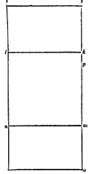
que est inter radicem de 1/3 533., et 100. dragmas: et si á puncto .d. protrahatur cathetus .dh.; et uis inuenire longitudinem eius, pone ipsum rem, et accipe medietatem laterum .de. et .bc., et multiplica eam in rem; et que prouenerint, equabantur .10., hoc est quadrilatero .dbce. Verbi gratia: quadratum lateris .de. est .100. minus radice 1/3 533.; quare quadratum medietatis lineę .de. est 25 minus radice 1/3 33.; ergo medietas lineę .de. est radix accepta sui quadrati; et medietas lateris .bc. est .5.; et sic pro medietate laterum .de. et .bc. habentur .25. minus radice 1/3 33., accepta eorum radice, et 5. dragmis; que multiplica per rem, hoc est per cathetum .dh. Et pro multiplicatione rei in .5. habebis 5. res; et pro multiplicatione rei in .25. minus radice 1/3 33., accepta eorum radice, habebis census .25. minus radice censuum census 1/3 33., accepta eorum radice; que omnia equantur .10.: tolle quidem ab utraque parte .5. res, remanebunt .25. census minus radice censuum census 1/3 33., accepta eorum radice, equales .10. minus .5. rebus: multiplica itaque hec omnia in se, uenient .25. census minus radice censuum census 1/3 33. equales .25. censibus, et .100. dragmis minus 100. rebus: ergo adde utrique parti 100. res, et radicem censuum census 1/3 33., et tolle ab utraque 25 census, remanebunt .100. dragme, et radix censuum census 1/3 33., que equantur .100. rebus: multiplica iterum .100., et radicem censuum census 1/3 33. in se, uenient census census 1/3 33., et .10000. dragme, et .200. radices censuum census 1/3 33, que equantur .10000. censibus, scilicet multiplicationi .100. rerum in se: reduc hec omnia ad censum census, quod est ut diuidas omnia que habes per 1/3 33., exibit census, et .300. dragme, et .6. radices censuum census 1/3 33.; que radices sunt una radix censuum census .1200., que equantur 300 censibus; tolle ab utraque parte radicem censuum census 1200., remanebunt census census, et 300. dragme equales .300. censibus, diminuta ex eis radice .1200. censuum census: et sic reducta est hec questio ad unam ex sex regulis algebrę; quia est sicut quando dicitur: census et numerus equantur radicibus; quod uolo demonstrare per figuram. Pone pro censu census quadratum .ik., cuius unumquodque latus est census; et ponam superficiem .lm. equalem .300. dragmis; et addam lineę .tm. lineam .mo., ut sit tota linea .to. 300.; et complebo superficiem .no.; erit ergo tota superficies .io. 300. census, cum .to. sit .300., et .it. sit census; et superficies .im. est sicut census census, et 300. dragme, et equantur 300 censibus minus radice 1200 censuum census. Quare superficies .no. est radix .1200. censuum census. Unde necesse est, ut linea .mo. sit radix .1200. dragmarum; quia cum ducitur census in radicem .1200. prouenit radix .1200. censuum census. Vnde si ex tota .to., que est .300., auferatur .mo., remanebit linea .tm. 300. minus radice .1200. dragmarum: diuidamus itaque eam in duo equa ad punctum .p., et erit .tp. 150., minus radice .300. dragmarum: linea igitur .tm. diuisa est in duo equalia ad punctum .p., et in duo inequalia ad punctum .k. Vnde si ex quadrato lineę .tp. auferatur superficies, que fit ex .tk. in .km., hoc est ex .lk. in .km., remanebit quadratum lineę .kp. Quare multiplicemus .tp., hoc est .150. minus radice .300. in se, uenient 22800. minus radice 6750000.; de quibus auferamus id quod prouenit ex .lk. in .km., quod est .300., remanebunt .22500. minus radice de 6750000. pro quadrato lineę .pk.; quorum radix si auferatur ex .tp., remanebit pro quantitate census .tk. 150. minus radice .300., et minus radice differentię, que est inter radicem .6750000., et dragmas .22500.; et hoc quod remanet, quod est census
f. 0227 · p. 220
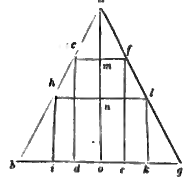
.tk., est secundum propinquitatem circa 1/5 1; cuius radix, que est circa 1/12 1., est cathetus quesita .dh.; et hoc uolui demonstrare. Et si dicetur: in triangulo .abg., cuius unumquodque latus est .10., protractum est quadrilaterum oblongum et rectorum angulorum .cdef., et quadrilaterum .h.i.k.l., quod est similiter oblongum et rectiangulum; et est .10. mensura uniuscuiusque quadrilateri; et queritur quanta est longitudo laterum .cf. et .hl., que sunt sibi inuicem equidistantia, nec non et lateris .bg.; protraham primum perpendicularem .am. no., et pro utroque laterum .cf. et .hl. ponam radicem rei; et erit unaqueque perpendicularium .am. et .an. radix 3/4 rei; quibus extractis ex perpendiculari .ao., que est radix .75., remanebit pro unaquaque linearum .mo. et .no. radix .75. minus radice 3/4 rei: et quia embadum quadranguli .cdef. surgit ex ductu .dc. in .cf., hoc est .om. in .cf., multiplicemus .om. in .cf., hoc est radicem .75. minus radice 3/4 rei, in radicem rei; et que prouenerunt, equabuntur .1017.: ex multiplicatione radicis rei in radicem .75. dragmarum uenient radix .75. rerum; et ex multiplicatione radicis rei in radicem 3/4 rei diminutam prouenit radix 3/4 census diminuta, que equantur .10. Et si multiplicauerimus .on. in .hl., hoc est radicem .75. minus radice 3/4 rei, in radicem rei, ueniet similiter radix 75 rerum minus radice 3/4 census; que etiam equantur .10.: adde ergo utrique parti radicem 3/4 census, remanebit radix .75. rerum equalis .10. dragmis, et radici 3/4 census: multiplica ergo .10., et radicem 3/4 census in se, uenient .100., et 3/4 census, et radix 300 censuum, que equantur radici .75. rerum ducta in se, hoc est 75. rebus. Reduc hec omnia ad censum, quod est ut multiplices omnia que habes per 1/3 1., et uenient census, et dragme 1/3 133., remanebunt census, et dragme 1/3 133. equales .100. rebus, diminuta inde radice censuum 1/3 533.: accipe ergo medietatem radicum, que est .50., minus radice 1/3 133.; et multiplica eas in se, uenient .2633. minus .100. radicibus de 1/3 133.; de quibus extrahe dragmas 1/3 133., que sunt cum censu, remanebunt .2500. minus radice 1/3 1333333.; quarum radicem extrahe de medietate radicum, scilicet de 50. minus radice 1/3 3133. Residuum erit res minor, scilicet quadratum lineę .cf. Et super .50. minus radice 1/3 133. addideris radicem residui, quod est inter radicem 1/3 1333333., et dragmas .2500., quod prouenerit, erit quadratum maioris rei, scilicet lineę .hl.; et est quadratum lineę .cf. secundum propinquitatem 7/9 1; et eius radix est 1/3 1.; et quadratum lineę .hl. secundum propinquitatem est 1/9 75; et eius radix est 2/3 8.: et si uolumus habere notitiam laterum .cd. et .hl., ponemus similiter unumquodque eorum radicem rei: et quia trigona .hbi. et .cbd. similia sunt trigono .abo., erit sicut quadratum lineę .bi. ad quadratum lineę .ih., ita quadratum lineę .bo. ad quadratum lineę .oa. Sed quadratum lineę .bo. est 1/3 quadrati lineę .oa.; quare quadratum lineę .bi. est 1/3 rei, cum linea .ih. sit radix rei: propter eadem ergo quadratum lineę .kg. erit 1/3 rei; ergo unaqueque rectarum .bi. et .kg. est radix 1/3 rei; quibus extractis ex tota .bg., que est .10., remanebit linea .ik. 10. minus duabus radicibus 1/3 dragmę, que sunt radix de 1/3 1.: multiplicemus ergo lineam .hi. in lineam .ik., scilicet radicem rei in .10. minus radice 1/3 1., ueniet radix .100. rerum minus radice census 1/3 1., que equantur .10. Similiter quia est sicut .bo. ad .oa., ita .hd. ad .dc., et .el. ad .ef. Quare unaqueque rectarum .bd. et .eg. est radix 1/3; quibus extractis ex .bg., remanebit .de. 10. minus radice 1/3 1.: unde cum multiplicauerimus .cd., que est radix rei, in .de., ueniet
f. 0228 · p. 221

similiter radix .100. rerum minus radice census 1/3 1., quod erat .10. similiter: vnde si utrique parti addatur radix census 1/3 1., erit .10., et radix census 1/3 1. equales radici .100. rerum: multiplica itaque .10., et radicem census 1/3 1. in se, erunt .100., et census 1/3 1., et radix censuum 1/3 533., que equantur .100. rebus, scilicet multiplicationi radicis .100. rerum in se. Reduc modo omnia que habes ad censum, quod est ut ducas omnia que habes in 3/4 dragme, uenient census, et 75, et radix .300. censuum equales .75. rebus: abice itaque ab utraque parte radicem .300. censuum, remanebunt census, et .75. dragme, que equantur .75. rebus, diminuta ex eis radice .300. censuum: multiplica medietatem radicum in se, que sunt 1/2 37. minus radice .75., uenient 1/4 1481., diminutis inde .75. radicibus de 75.; de quibus tolle .75., que sunt cum censu, remanebunt 1/4 1406. minus radice 481875; quarum radicem abice ex medietate radicum, scilicet ex 1/2 37., minus radice 75., residuum erit res minor, scilicet quadratum lineę .hi.; quod quadratum est circa 1/4 1., et eius radix est circa 1/6 1; et hec est longitudo lineę .hi.: quam si multiplicauerimus in .hl., que est circa 2/3 8., nimirum uenient .10. pro quadrilatero .hikl.; et hoc uolebamus. Similiter si super 1/2 37. minus radice .75. addiderimus radicem differentię, que est inter 421875., et dragmas 1/4 1406., habebimus quadratum maioris rei, scilicet lineę .cd.; quod quadratum est circa 1/4 56., et eius radix, que est linea .cd., est circa 1/2 7.; qua multiplicata in lineam .cf., que est circa 1/3 1, uenient .10. pro quadrilatero .cdef., ut oportet. Aliter quia inuenimus superius quadratum lateris .cf., quod cum res esse 50 minus radice 1/3 133., et radice differentię, que est inter radicem 1/3 1333333., et 2500. dragmas; et quadratum ex .am. fuit 3/4 rei; si acceperimus 3/4 ex predictis, que sunt res, habebimus quadratum lineę .am. Nam 3/4 de 50. sunt 1/2 37., et 3/4 radicis de 1/3 133 diminutę habebuntur, si multiplicauerimus quadratum de 3/4, quod est 9/16, in 1/3 133.; et ex hoc quod prouenerit, acceperimus radicem; ex qua multiplicatione prouenit radix .75. diminuta. Similiter acceperimus 9/16 de 2500., et 81/256 de 1/3 1333333., et uenient 1/4 1406. minus radice 421875., accepta inde radice; et sic pro quadrato lineę .am. habentur 1/2 37., diminuta radice .752., minus radice differentię, que est inter radicem 421875. et 1/4 1406.; quarum radicem extrahe ex tota .ao., que est radix .75., remanebit pro .mo., hoc est pro .cd., 1/2 7., et secunda .25.; et .cf. est circa 1/3 1. minus secundis 2/3 4.: Et si super 1/2 37., minus radice 75., addatur radix differentię, que est inter radicem 421875 et 1/4 1406., quod prouenerit, erit quadratum catheti .an.; quorum radix si auferatur ex .ac., remanebit pro linea .no., hoc est pro linea .hi., circa 1/6 1. Rursus in triangulo .abg., cuius unumquodque latus est .10., protractum sit quadrilaterum .cbef. habens angulos .cfe. rectos; et sit mensura ipsius quadrilateri .10.; et uolo scire quantitatem lateris .fe. protraham primum in triangulo .abg. cathetos .ah.: et .ci., et erunt trianguli .bic. et .gef. similes triangulo .ahb. Quare erit sicut quadratum lateris .bh. ad quadratum lateris .ha., ita quadratum lateris .bi. ad quadratum lateris .ic., et quadratum lateris .ge. ad quadratum lateris .ef. Est enim quadratum lateris .bh. tertia pars ex quadrato lateris .ha.; erit ergo quadratum lateris .bi. 1/3 ex quadrato .ic.; et quadratum lateris .ge. ex quadrato lateris .ef. erit similiter 1/3: et quia mensura quadranguli .cbef. colligitur ex multiplicatione .ef. in medietatem laterum .cf. et .be., ponam latus .ef. radicem rei; quare .eg. erit una radix 1/3 rei; qua subtracta ex tota linea .bg., remanebit
f. 0229 · p. 222
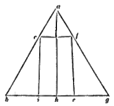
pro linea .be. 10. minus radice 1/3 rei: et quia anguli .cfe. et .feb. sunt recti, erit linea .cf. equidistans lineę .be.: sunt enim .ci. et .fe. sibi inuicem equidistantes; quare .cf. et .ie. sibi inuicem sunt equales, nec non et recta .ei. recte .fe. equalis est: vnde si tollatur .cf., scilicet .ie., ex tota .bg., que est .10., remanebunt pro linea .cf. 10. minus duabus radicibus 1/3 rei; quibus additis cum mensura lateris .be., que est .10. minus radice 1/3 rei, egredientur .20., diminutis tribus radicibus 1/3 rei, pro quantitate laterum .cf. et .be.; quorum medietatem, que est .10. minus radice 3/4 rei, si multiplicauerimus in lineam .fe., que est radix rei, ueniet radix .100. rerum minus radice 3/4 census, que equantur .10.: adde utrique parti radicem census 3/4, et erunt .10. dragme, et radix 3/4 census, que equantur radici .100. rerum: multiplicemus ergo .10., et radicem 3/4 census in se, uenient uenient (sic) 100., et 3/4 census, et radix .300. censuum, que equantur .100. rebus, scilicet multiplicationi radicis .100. rerum in se: reduce hec omnia ad censum, quod est ut multiplices omnia que habes per .31., et erunt census, et dragme 1/3 133., et radix censuum 1/3 533. equales rebus 1/3 133.: abice ab utraque parte radicem censuum 1/3 533., remanebunt census, et dragme 1/3 133. equales rebus 1/3 133., diminuta ex eis radice censuum 1/3 533.: dimidia ergo radices, erunt 2/3 66. minus radice dragmarum 1/3 133.; quas duc in se, uenient 4/9 4444., et radix 10/27 2370370.; quorum radicem habice ex medietate radicum, scilicet ex 2/3 66. minus radice 1/3 133., residuum erit res, scilicet quadratum lateris .ef.; que sic fiunt: radicem 10/27 2270370, que est circa .1539., et minuta .26., et secunda .2., et tertia 35., abice 4/9 4444., remanebunt .2904., et minuta .50., et secunda .37., et tertia .25.; quorum radicem, que est .53., et minuta .53., et secunda .47., et tertia .46., adde cum radice de 1/3 133., que est .11., et minuta .32., et secunda .49., et tertia .23., erunt .65., et minuta .26., et secunda .36., et tertia .50.; que tolle ex 2/3 66, remanebit .1., et minuta .13., et secunda .23., et tertia pro quantitate rei; quorum radix, que est circa .1., et minuta .6., et secunda .21., et tertia .20., erit linea .ef.; et hoc uolui demonstrare. Et si uis habere notitiam laterum .cf. et .be., dupliciter ea inuenire poteris: primum secundum propinquitatem accipe 1/3 rei, scilicet de .1., et minutis 13, et secundis 23, et tertia, uenient miuuta .22., et secunda .27., et tertia .6., et quarta .40. pro quadrato lineę .eg.; quorum radicem, que est minuta 38., et secunda .18., et tertia .42., tolle ex tota .bg., remanebit .be. nota: et si duplum de minutis .38., et secundis 18, et tertijs 42. tolles ex .10., quod remanebit, erit latus .cf. Et si uis habere notitiam lateris .cb., multiplica .ci. et .ib. in se, ueniet res 1/3 1. pro quadrato lineę .cb. Quare multiplica .1., et miuuta .13., et secunda 23, et tertia .1. per 1/3 1.; et eius quod prouenerit radicem accipe, et habebis latus .cb.: est enim medietas laterum .cf. et .de. 9., et minuta .2., et secunda .31., et tertia .57.; que ducta in .ef., scilicet in .1., et minuta 6, et secunda .21., et tertia .20., uenient .10. et parum plus, uidelicet tertia .2., et quarta .43., et quinta .36. Aliter quia quadratum lineę .eg. est 1/3 quadrati lineę .ef.; et quadratum lineę .ef. est 2/3 66. miuus radice 1/3 133, et radice differentię, que est inter radicem 10/27 2370370. et 4/9 4444., accipe 1/3 de 2/3 66, et de radicibus suprascriptis, et habebis pro quadrato lineę .eg. 2/9 22. minus radice 22/27 14., et miuus radice differentię, que est inter 1/9 radicis de 10/27 2370370 et 1/9 de 4/9 4444., hoc est inter radicem 13472 9263 et 67/81 493.: et cum ex his acceperis radicem, habebis .3990. pro linea .eg. circa minuta .38., et secunda .27., et tertia .42.:
f. 0230 · p. 223
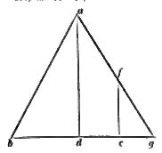

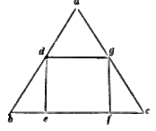
et quia est sicut .ab. ad .bh., ita .cb. ad .bi., erit .cb. duplum minutorum .38., et secundorum .27., et tertiorum .42.; quod duplum est .1., et minuta .16., et secunda .55., et tertia .24.; quibus extractis ex tota .ab., remanebit pro quantitate lineę .ac., hoc est pro .cf. 8., et minuta .43., et secunda .4., et tertia .36.: est enim triangulus .acf. equilaterus, cum sit similis triangulo .abg.: et si ex .bc., hoc est ex .10., auferantur minuta .38., et secunda .27., remanebunt pro linea .be. 9., et minuta .21., et secunda .32., et tertia .18. Rursus in triangulo .abg. equilatero, cuius unumquodque latus est .10., et eius perpendicularis est .ad., protractum est quadrilaterum .adcf., cuius mensura est .10.; et queratur quanta sit longitudo lineę .cf.; primum quidem manifestum est, quod mensura trianguli .adg. est radix de 3/4 478., que prouenit ex ductu .ad. in dimidium .dg.; de qua radice si auferantur .10., scilicet quadrilaterum .adcf., residuum erit triangulus .gcf., qui est similis triangulo .gda. Vnde quadratum lineę .cf. triplum est quadrati lineę .gc.: ponas ideo pro quadrato lateris .cf. rem. Quare quadratum lateris .cg. erit 1/3 rei; et multiplicabo .cf. in dimidium .cg., hoc est radicem rei in radicem 1/12 rei, ueniet radix 1/12 census, qua radice addita cum quadrilatero .adcf., ueniet .10., et radix 1/12 census, que equantur radici 3/4 478.: multiplica ergo .10., et radicem 1/12 census in se, uenient 100., et 1/12 census, et radix censuum 1/3 33., que equantur dragmis 3/4 476.: abice ergo ab utraque parte .100., et multiplica omnia que remanent per .12., ut reintegretur census, exibit census, et radix .4800. censuum, que equantur dragmis .4425.: dimidia ergo radices, que sunt cum censu, et multiplica medietatem in se, erunt .1200.; cum quibus adde .4425., uenient .5625.; de quarum radice, que est .75., abice radicem de .1200., remanebunt pro quantitate rei, scilicet lineę .qf. 75. minus radice .1200.; quorum tertia pars, que est .25., minus radice 1/3 133., est quadratum lineę .cg.; quorum radix si extrahatur ex .dg., que est .5., remanebit pro linea .dc. circa 1/3 1.; et .cf. secundum propinquitatem est 1/3 6.; et linea .ad. est 2/3 8.; quibus et medietas laterum .cf. et .da. est 1/2 7.; quibus ductis in .de., scilicet in 1/3 1., uenient .10. pro mensura quadrati lateris .adcf.; et hoc uolui demonstrare. Item in triangulo equilatero .abc., cuius unumquodque latus est .10., protractum est quadratum .defg. equilaterum et equiangulum; et uolo habere notitiam laterum ipsius quadrati. Quia latera ipsius quadrati sibi inuicem sunt equalia, erit latus .dg. equidistans lateri .bc.; quare triangulus .adg. equilaterus est: quibus intellectis, ponam latus .dg., hoc est latus .ad. radicem rei; et auferam .ad. ex .ab., remanebunt pro linea .db. 10. minus radice rei; que ducam in se, uenient .100., et res minus radice 400 rerum pro quadrato lineę .db.: deinde ducam .de. in se, ueniet res; et ducam .eb. in se, ueniet 1/3 rei; et sic res 1/3 equatur .100. dragmis, et rei minus radice .400. rerum: tolle ab utraque parte rem, et 1/3 rei, et adde utrique parti radicem .400. rerum, et erunt 100 minus 1/3 rei equales radici .400. rerum: multiplica unumquodque latus in se, erunt .10000, et 1/9 census minus rebus 2/3 66. equales .400. rebus: adde utrique parti res 2/3 66., et multiplica per .9. omnia que habes, ueniet census, et 90000. dragme equales rebus .4200.: dimidia ergo res, erunt .2100.; que multiplica in se, erunt .4410000.; de quibus abice .90000., remanebunt .4320000.; quorum radicem, que est .2078., et minuta .27., et secunda .40. parum minus extrahe de .2100., remanebunt parum plus de .21., et minutis .32., et secundis .20. pro quantitate rei, hoc est pro quadratu
f. 0231 · p. 224
.de.; quorum radix, que est circa .4., et minuta .38., et secunda et tertia est unumquodque laterum ipsius quadrati. Et est etiam secundum hoc in triangulo .abc. equilatero, cuius unum constitutum penthagonum equilaterum .adefg., cuius unumquodque latus, per ea que diximus, erit notum. Aliter protraham cathetum .ai., et ducam .ai. in .bi., hoc est radicem de .75. in .5., ueniet radix .1875. dragmarum pro area totius trianguli .abc. Deinde ducam .de., scilicet radicem rei, in .be., hoc est in radicem 1/3 rei, exibit radix 1/3 census pro area triangulorum .deb. et .gfc.: et ducam etiam .de. in se, et ueniet res pro area quadrati .defg. Et ducam rursus .ad. in se, et ueniet res; de qua tollam quadratum lineę .dh., quod 1/4 rei est, remanebunt 3/4 rei pro quadrato catheti .ah.: et ducam .ah. in .dh., et ueniet radix 3/16 census pro area trianguli .adg.: deinde addam radicem 3/16 census cum radice 1/3 census; que additio sic fit: multiplicetur radix 1/3 census in se, et radix 3/16 census in se, ueniet 1/3 census et 3/16, hoc est 25/48 census; et radix 1/3 census in radicem 3/16 census, et prouenit radix 1/16 census census, hoc est 1/4 census, cuius duplum est 1/2 census; quod additur cum 25/48 census, egreditur census 1/48 1., cuius radix est area triangulorum .deb. et .feg. et .adg. Quam aream inueniam aliter. Quia trigona .deb. et .ahd. sibi inuicem sunt similia, habebunt circa equales angulos latera proportionalia. Quare erit sicut .bd. ad .de., hoc est ad .da., ita .da. ad .ah.: recte quidem .bd. et .da. et .ah. continue proportionales sunt. Quare est sicut .bd. prima ad .ah. tertiam, ita triangulus .dbe. ad triangulum .adh. Sed sicut .bd. ad .ah., ita quadratum lineę .bd. ad quadratum lineę .da.: est enim quadratum lineę .bd. res 1/3 1.; et quadratum lineę .da. est res; ergo est sicut 1/3 1. ad .1., hoc est sicut .4. ad .3., ita triangulus .dbe. ad triangulum .adh. Sed est sicut triangulus .dbe. ad triangulum .adh., ita duplum trianguli .dbe., hoc est trianguli .dbe. et .gef. ad duplum trianguli .adh., hoc est ad triangulum .adg.: ergo est sicut .4. ad .3., ita trianguli .dbe. et .def. ad triangulum .adg. Quare erit sicut .4. ad coniunctum de 4. et .3., hoc est ad .7., ita trianguli .dbe. et .gef., qui sunt radix 1/3 census ex his tribus triangulis. Quare si multiplicauerimus radicem 1/3 census per .7., et summam diuiserimus per .4., ueniet radix census 1/48 1 pro area triangulorum .dbe. et .gcf. et .adg.: cum qua si addiderimus quadratum .df., quod est res, habebantur radix census 1/48 1, et res pro area trianguli .abc. Quam aream inuenimus superius esse radicem de. 1875: ergo res, et radix census 1/48 1. equatur radici 1875.: tollamus ab utraque parte rem, et erit radix .1875. minus re equales radici census 1/48 1. Duc ergo utrumque latus in se, et erunt census, et dragme .1875., minus radice 7500. censuum, equales censibus 1/48 1.: adde ergo utrique parti radicem .7500. censuum, et tolle ab utraque parte censum, remanebunt 1/48 census, et radix .7500. censuum equales dragmis .1875. Reduc ergo omnia que habes ad censum, quod est ut multiplices ea per .48., et uenient census, et radix .17280000. equales 90000. dragmis: dimidia ergo radicem, que est cum censu, ueniet radix 4320000; quam duc in se, uenient .4320000.; super que adde .90000., erunt .4410000.; de quarum radice, que est .2100., abice radicem de 4320000., que est .2078., et minuta .27., et secunda .40., et tertia, secundum propinquitatem, remanebunt .21., et minuta .32., et secunda .20., et tertia pro quantitate rei; quorum radix, ut supra diximus, est unumquodque ex lateribus penthaguni .adefg., siue quadrati .defg.; et hoc uolui demonstrare.
f. 0234 · p. 227
Flos super Solutionibus Quarundam Questionum (1225)¶
Versio Anglica: Flos (1225) — The Imperial Cubic & Book X Irrationals (pp. 227–234) · Commentarius: Notes on the Flos Cubic & Congruum
Incipit flos Leonardi bigolli pisani super solutionibus quarumdam questionum ad numerum et ad geometriam, uel ad utrumque pertinentium.
Intellecto, beate pater et domine uenerande .R. dei gratia Scē. Mar. In Cosmidin diac. Cardinalis dignissime, quod meorum operum copiam non preceptiue saltim, quod uos magis decebat, sed simpliciter petere fuistis per litteras uestre sanctitatis dignati; nihilominus tamen petitionem ipsam reuerenter suscipiens in mandatis, non solum parere uoto uestro sattegi deuotius in hac parte, verum etiam de quarumdam solutionibus questionum à quibusdam philosophis serenissimi domini mei Cęsaris, et alijs per tempora mihi oppositarum, et plurium que subtilius quam in libro maiori de numero, quem composui, sunt solute, ac de multis, quas ipse met ad inueni, ex diffusa quidem multitudine compilans hunc libellum ad laudem et gloriam nominis uestri compositum ideo uolui titulari; quia illa nobis florida clericorum elegantia radiantibus dictaui, atque etiam quia ibi nonnulle sunt floride quamquam nodose apposite questiones, tanque geometrice quam arismetrice indagatione uigili sic probabiliter enodate, ut ne dum non solum floreant inse ipsis, immo et quod per eas, uelut ex radicibus plantule emergunt innumere questiones, quibus interdum uacare sidignabiminj, poteritis, si placebit, inter curas et occupationes uestras ab otiositate illa, que uirtutum est nouerca, uacando sub exercitatione ingenij, solatia etiam nec sterilia, sed officiosa captare. Si autem hoc nouero à uestrę clementię benignitate acceptari; quicquid amene subtilitatis uel utilitatis ulterius adinuenero, eidem operi, ut uestram merear gratiam adipisci, obnoxius cumulabo, eadem et me ipsum correctioni dominationis uestre affectuosius supponendo.
Explicit prologus; incipit tractatus eiusdem.
Cvm coram maiestate uestra, gloriosissime princeps Frederice, magister Iohannes panormitanus, phylosophus uester, pisis mecum multa de numeris contulisset, interque duas questiones, que non minus ad geometriam quam ad numerum pertinent, proposuit. Quarum prima fuit ut inueniretur quadratus numerus aliquis, cui addito uel diminuto quinario numero, egrediatur quadratus numerus; quem quadratum numerum, ut eidem magistro Iohanni retuli, inueni esse hunc numerum, vndeccim et duas tertias et centesimam quadragesimam quartam unius. Cuius numeri radix est ternarius et quarta et viª. unius. Cui quadrato numero si addantur quinque, prouenient .xvi. et due tertie et una centesima quadragesima quarta; qui numerus est quadratus. Cuius radix est quatuor et una duodemima. Item si auferantur .v. ab eodem quadrato numero, remanebunt vi. et due tertie et una centesima quadragesima quarta; qui numerus etiam quadratus est. Cuius radix est duo et tertia et quarta unius. Et cum diutius cogitassem unde oriebatur predictę questionis solutio, inueni ipsam habere originem ex multis accidentibus, que accidunt quadratis numeris, et inter quadratos numeros: quare hinc sumens materiam, libellum incepi componere ad uestrę maiestatis celsitudinis gloriam; quem libellum quadratorum intitulaui, in quo continebuntur rationes et probationes, geometrice solutiones questionis predictę, et multarum aliarum questionum solutiones, quem habere poterit uestra immensitas, si celsitudini uestre placuerit.
f. 0235 · p. 228
Altera uero questio á predicto magistro Iohanne proposita fuit, ut inueniretur quidam cubus numerus, qui cum suis duobus quadratis et decem radicibus in unum collectis essent uiginti: super hoc meditando putaui huius questionis solutionem egredi ex his que continentur in .x.° lib.° Euclidis; et ob hoc super ipso .x.° Euclidis accuratius studui, adeo quod sui teoremata ipsius memorie commendaui, et ipsarum intellectum comprehendi. Et quia difficilior est antecedentium et quorumdam sequentium librorum Euclidis, ideo ipsum xᵐ librum glosare incepi, reducens intellectum ipsius ad numerum, qui in eo per lineas et superficies demonstratur; qui liber .x.ª tractat de diuersitatibus xv. linearum rectarum, quarum .xv. linearum due uocantur rite, seu ratiocinate.
Relique .xiij. dicuntur aloge, siue inratiocinate. Ex his duobus ritis una dicitur riti, seu ratiocinata longitudine et potentia. Alia uero potentia solum. Per primam ex his duabus intelligitur numerus, qui potest numerari, ut unus, duo, tres et ceteri, uel partes unitatis, ut medietas: tertia et quarta et cetere fractiones; qui omnes sunt radices quadratorum numerorum. Per secundam intelliguntur radices numerorum ratiocinatorum non quadratorum. Vnde potentia earum radicum numeratur, et ipse radices numerari non possunt. Et ideo uocantur numeri surdi. Et ex xiij.ᶜⁱᵐ predictis lineis prima est simplex, que uocatur media, per quam intelligitur radix radicis numeri non quadrati. Et ex reliquis sex sunt radices numerorum binomiorum, hoc est duorum nominum. Relique sunt radices recisorum. Ex duobus quidem nominibus sunt numeri compositi ex numero et radice, uel ex duabus radicibus; que compositio fit sex modis. Recisus quidem numerus dicitur residuum, quod est inter numerum et radicem, uel inter duas radices; quod etiam fit sex alijs modis, ut Euclides dicit.
Et cum studiose super hos quindecim numeros, et super eorum diuersitates cogitarem, inueni nullum ipsorum congruere posse uni ex .x. radicibus supradictis, que cum duobus quadratis et cubo sint .xx., ut in sequentibus geometrice demonstratur.
Adiaceat quidem linea .ab. pro una ex dictis decem radicibus, cui applicetur superficies recti angula .bd. latitudinem faciens rectam .dg., que sit .x. Et recte quidem .bg. applicetur superficies rectiangula .eg. equalis cubo, qui fit a numero .ab.
Rursus recte .ez. aplicetur palilogramum (sic) orthogonium .iz. equale duobus quadratis, qui fiunt a numero .ab.; erit ergo tota .at. superficies rectiangula et equalis xx.: sunt enim anguli .a b g. et g b e. recti. Quare indirecto est linea .be. linee .ba. Similiter demonstrabitur indirecto esse linea .ei. linee .eb. Quare tota .ai. linea recta est et continua. Similiter et linea .dt. est recta; paralilogramum ergo est superficies .at., et est orthogonium, cum omnes anguli ipsius sint recti. Et est .x. una queque linearum .ad. bg. ez. it. Verum quoniam linea .ab. est una ex suprascriptis .x. radicibus, erit superficies .ag. equalis .x. radicibus predictis, cum linea .bg. sit .x. Siquidem et superficies .bz. est equalis cubo, qui fit á radice .ab.; et superficies itaque .et. est equalis duobus quadratis, quorum unusquisque fit ab eadem radice .ab. Ergo tota superficies .at. continetur ex uno cubo et ex duobus quadratis et x radicibus; qui omnes coniuncti esse .xx. proponuntur. Quare superficies .at. est .xx. Et quoniam
f. 0236 · p. 229
unumquodque laterum .ad. et .it. est .x., erit unumquodque laterum .ai. et .dt. duo. Cum superficies .at. sit .xx. Dico primum itaque radicem .ab. esse non posse ex numeris ratiocinatis, neque ex radicibus ratiocinatorum, uel ex radicibus radicum ratiocinatorum, seu ex sex numeris coniunctorum uel recisorum, aut ex sex numeris residuis suprascriptis, neque ex radicibus coniunctorum uel recisorum. Et si possibile est, esto primum radix .ab. ex numeris, qui sunt ratiocinati longitudine et potentia. Et quoniam tota .ai. est duo, et .ab. minor est quam .ai.; ergo radix .ab. minus est binario. Et quia positum est, ipsam .ab. esse ex numeris ratiocinatis; aut enim est integer numerus .ab. aut fractus: esto prius integer, si est possibile. Et quoniam nullus numerus integer est minor binario nisi unitas, erit ergo radix .ab. unum. Quare superficies .bd. erit .x.; et cubus, qui fit ab unitate .ab., scilicet superficies .dz. erit unum. Item et duo quadrati, qui sunt ab unitate .ab., scilicet superficies .iz. erit duo: quare tota superficies .at. erit .xiii. tantum; sed superficies .at. est .xx. Non ergo radix .ab. est numerus integer.
Similiter ostendetur quod numerus .ab. non est fractus. Si fractus enim est numerus .ab., cum cubicatur, egrediuntur ex illa cubicatione fractiones et fractiones fractionis et fractiones fractionis fractionis: et cum multiplicatur in se numerus .ab., si est fractus, egreditur ex duplo multiplicationis eius fractio fractionis uel fractiones fractionis. Et cum multiplicatur idem numerus ruptus, scilicet .ab. in .bg., scilicet in .x., egredietur quandoque fractio uel fractiones tantum, et quandoque egredietur numerus integer ex ipsa multiplicatione. Cum itaque multiplicatur .ab. in .bg., prouenit numerus .bd. Et cum cubicatur numerus .ab., prouenit numerus .bz. Et cum duplicatur multiplicatio numeri .ab. in se, prouenit numerus .et. Ergo si fractus est numerus .ab., occurrit quandoque in numero .bd. fractio aliqua uel fractiones tantum; et in numero quidem .bz. occurrunt fractiones et fractiones fractionis et fractiones fractionis fractionis; et in numero quoque .et. occurrunt fractiones et fractiones fractionis tantum. Vnde si coniungantur fractiones, que sunt in numeris .bd. et .bz. et .zi., nunquam ex ipsorum coniunctione poterit numerus integer procreari. Quare si fractus est numerus .ab., fractus erit numerus .di., qui est .xx.; quod est inconueniens. Et si numerus .bd. est siue fractione, reliquus .bt. erit similiter sine fractione, cum totus numerus .ai. sit .xx.; quod non proueniet, cum in numero .et. sint fractiones et fractiones fractionis, et in numero .bz. sint fractiones et fractiones fractionis et fractiones fractionis fractionis. Non ergo fractus est numerus .ab., neque integer.
Ostendam rursus impossibile esse quod numerus .ab. sit radix alicuius numeri ratiocinati. Ducatur quidem .ab. in se, et proueniat numerus .bk.; et ex .bk. in .ba. prouenit superficies rectiangula .ak.; que superficies est equalis cubo, qui fit à numero .ab. Quare superficies .ka. equalis est superficiei .bz. Equalium uero et unum uni equalem habentium angulum parallilogramorum contrarie potiuntur latera, que circa equales angulos subtenduntur, ut in .vi.ᵗᵒ Euclidis reperitur. Ergo est sicut .gb. ad .bk., ita .ab. ad .bc. Et cum quatuor quidem quantitates proportionales sunt, fueritque sicut prima ad secundam, ita tertia ad quartam; et prima fuerit secunde commensurabilis, et tertia quarte commensurabilis erit, ut in .x.° Euclidis reperitur. Est enim recta .ab. radix numeri. Quare quadratus, qui fit ab ea, scilicet numerus .bk., est ratiocinatus; et .gb. est decem, qui est ratiocinatus; ergo primus numerus
f. 0237 · p. 230
.gb. commensurabilis est secundo .bk. Quare et ab numerus numero be commensurabilis est. Est enim ab radix numeri ratiocinati. Quare et .be. est radix numeri ratiocinati. Et quia .ab. commensurabilis est .be.; erit ergo .ab. toti .ae. commensurabilis. Quare .ae. est radix numeri ratiocinati, et est commensurabilis potentia solum toti .ai. numero, scilicet binario. Quare si a binario .ai. auferatur radix .ae., qui sunt potentia solum ratiocinati, remanebit .ei. abscisio, siue recisum; quod inratiocinatum esse ab Euclide in .x.° demonstratur. Sed quia ex ductu .ab. in se prouenit numerus ratiocinatus, scilicet dimidium superficiei .et.; erit ergo tota superficies .et. ratiocinata, cuius unum latus .ez. est ratiocinatum, quod est decem. Quare latus .ei. est ratiocinatum; quod superius ostensum est esse inratiocinatum. Vnde impossibile est quod radix .ab. sit radix numeri ratiocinati, ut predixi.
Aliter quia linea .ae. est radix numeri ratiocinati, ut ostensum est; et linea .ez. est numerus ratiocinatus, erit superficies .de. radix numeri; et superficies .et. est numerus ratiocinatus. Quare tota superficies .di. constat ex numero in ratiocinato et ratiocinato; quod est inconueniens, cum superficies .di. sit .xx. Amplius dico quod radix .ab. non est radix radicis alicuius numeri; sed si possibile est. Esto .ab. radix radicis alicuius numeri ratiocinati; et ex ductu item .ab. in se proueniat .bk.; et ex .ab. in .bk. prouenit superficies .ka., que est equalis superficiei .bz., hoc est cubo, qui fit á radice .ab. Quare est sicut .gb. ad .bk., ita et .ab. ad .be. Et quoniam .ab. est radix radicis numeri ratiocinati; erit ergo .bk. radix radicis numeri ratiocinati. Quare .gb. et .bk. numeri commensurabiles sunt potentia solum; et .ab. et .be. commensurabiles sunt similiter potentia tantum. Media enim est linea .ab., hoc est radix radicis numeri ratiocinati. Media ergo erit et linea .be., et incommensurabilis linee .ba. longitudine. Quare tota .ae. sit ex duabus medijs potentia solum commensurabilibus; ergo .ae. est una ex duabus bimedialibus lineis, scilicet radix unius ex compositis numeris supradictis. Item ex ductu .ab. in se prouenit dimidium superficiei .et., scilicet superficies .li.; que superficies aplicata est linee ratiocinate .le., que est quinque. Et quia quod á media secundum ritim et ductum latitudinem facit ritim et incommensurabilem ei cui adiacet longitudine. Riti ergo est recta .ei., et incommensurabilis recte .le. longitudine; ergo radix numeri ratiocinati est linea .ei., et est incommensurabilis linee .ai. longitudine; potentia enim solum sunt commensurabiles. Quare reliquum .ae. recisum est, hoc est abscisio. Nulla enim abscisio est binomia, ut in eodem .x.° reperitur. Quare cum superius ostensa sit linea .ae. esse bimedialis, que modo inuencta est abscisio; et quia nullum recisum bimediale constat, lineam .ab. non posse esse radicem radicis numeri ratiocinati; quod oportebat ostendere. Ostendam rursus, unam ex predictis radicibus, scilicet lineam .ab., esse non posse aliquam ex lineis compositis uel depositis, nec ex earum radicibus. Sed antequam ad huius rei probationem perueniam, uolo proprietates ipsarum linearum denotare. Per primam quidem ex sex lineis compositis intelligitur compositum ex numero et radice, cuius numeri potentia superhabundat potentiam radicis secundum quantitatem alicuius numeri quadrati: ut si componatur quaternarius cum radice septenarij, potentia quaternarij est .xvi., et potentia radicis de .vij. est .vij.; et sic potentia quaternarij addit .viiii. super potentia radicis de .vij.; qui nouenarius quadratus est, et eius radix
f. 0238 · p. 231est .IIII. Per secundam uero intelligitur compositio radicis et numeri, cuius radicis quadratus potest super quadratum ipsius numeri secundum quantitatem alicuius numeri habentis proportionem ad quadratum ipsius radicis, eam quam habet quadratus numerus ad quadratum numerum: ut si maius nomen sit radix de .CXII., minus sit .VII., tunc residuum quod est á quadrato septenarij, scilicet á XLVIIII. in .CXII., idest LXIII., habet proportionem ad .CXII., sicut quadratus numerus .VIIII. ad quadratum numerum .XVI. Per tertiam quoque intelligitur compositio duarum radicum diuersorum numerorum non habentium proportionem adinuicem sicut quadratus numerus ad quadratum numerum; et maius nomen potest plus minore, quod a commensurabili sibi longitudine, hoc est quod differentia, que est inter utrumque quadratum ipsarum radicum, habeat proportionem ad quadratum maioris radicis, sicuti quadratus numerus ad quadratum numerum: ut si primum nomen fuerit radix de .XVIII., secundum de .X., differentia, que est a .XVIII. usque in .X., scilicet .VIII., habet proportionem ad XVIII., eam quam habet quadratus numerus .IIII. ad quadratum numerum .VIIII.
Per quartam siquidem intelligitur compositum ex numero et radice, qui numerus potest plus ipsa radice, eo quod ab incommensurabili sibi longitudine, hoc est quod differentia, que est inter quadratum ipsius numeri et quadratum radicis, non sit quadratus numerus, ut accidit de quaternario et radice sexnarij. Per quintum autem intelligitur compositum ex radice alicuius numeri non quadrati, et ex aliquo numero, in quo quadratus radicis potest plus quadrato illius numeri secundum quantitatem numeri non habentis proportionem ad quadratum radicis, sicuti quadratus numerus ad quadratum numerum, ut compositum ex radice sexnarij et ex binario. Per sextum namque intelligitur compositum ex duabus radicibus diuersis, quarum maior potest plus minore secundum quantitatem numeri non habentis proportionem ad quadratum maioris radicis, sicuti quadratus numerus ad quadratum numerum, ut est compositum ex radice octonarij et radice quinarij: horum quippe sex binomiorum radices habentur ex ordine sic. Primi quidem binomij radix est aliqua ex predictis sex lineis binomijs; quia cum multiplicatur numerus binomialis inse, nimirum ex ipsa multiplicatione primum binomium surgit. Radix quippe secundi binomij dicitur bimedialis prima, que componitur ex duabus radicibus radicis potentia solum commensurabilibus numerum continentibus: hoc est cum multiplicatur una earum in aliam, prouenit inde numerus ratiocinatus: ut si prima fuerit radix radicis de .VIII., et alia radix radicis duorum, prouenit ex earum multiplicatione radix radicis de .XVI., scilicet II. Tertij autem binomij radix est linea, que dicitur bimedialis secunda, que componitur ex duabus radicibus radicis potentia solum commensurabilibus medium, scilicet radicem numeri continentibus: hoc est cum multiplicatur una earum in aliam, id quod prouenit, est radix numeri non quadrati: ut si prima fuerit radix radicis .XII. Secunda radix radicis trium, ex quarum multiplicatione surgit in radicem sexnarij, scilicet in radicem radicis de .XXXVI. Quarti quoque binomij radix est linea, que dicitur maior, que componitur ex duabus lineis potentia incommensurabilibus, quarum quadrati insimul coniuncti faciunt numerum ratiocinatum; et ex multiplicatione unius in aliam prouenit numerus inratiocinatus, scilicet radix numeri. Vt si prima fuerit radix de .IIII. et ex radice de .XIII., et alia fuerit radix de .IIII. minus radice de XIII. Quinti siquidem binomij radix
f. 0239 · p. 232
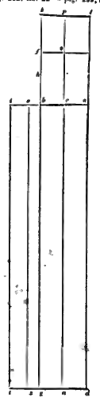
est linea, que dicitur riton et medium potens, hoc est super ratiocinatum et inratiocinatum numerum, que componitur ex duabus lineis potentia incommensurabilibus, quarum quadrati insimul iuncti faciunt radicem numeri; et ex multiplicatione unius in aliam prouenit numerus ratiocinatus. Vt si prima fuerit radix radicis de .XX. et ex duobus, et alia fuerit radix de .XX. minus .II. Sexti autem binomij radix est linea, que dicitur poteus super duos inratiocinatos numeros, que componitur ex duabus lineis potentia incommensurabilibus, quarum quadrati insimul iuncti faciunt numerum inratiocinatum; et ex multiplicatione unius in aliam surgit similiter numerus inratiocinatus: ut si prima fuerit radix radicis de XXIIII. et de radice de .VII., et alia fiat radix radicis de XXIIII. minus radice de .VII., hoc est cum multiplicatur prima ipsarum duarum linearum inse, prouenit radix de XXIIII. et radix de .VII.; et cum multiplicatur secunda inse, prouenit radix de XXIIII. minus radice de .VII.
Similiter .VI. numeri, qui dicuntur recisi seu apothami, immitantur seriem sex binomiorum suprascriptorum ordinate. Nam primum recisum constat ex numero minus radice. Secundum ex radice minus numero. Tertium ex radice minus radice. Quartum constat ex nominibus primi. Quintum ex nominibus secundi. Sextum ex nominibus tertij. Sed in tribus prioribus recisis maiora nomina possunt plus minoribus eo, quod a commensurabili ipsis longitudine in reliquis quod ab incommensurabilibus.
Nam radix primi recisi est aliquod suprascriptorum recisorum. Radix uero secundi est recisum bimedialis prime, hoc est radix radicis minus radice radicis, ex quarum multiplicatione prouenit numerus ratiocinatus.
Tertij autem radix est recisum bimedialis secundi, hoc est radix radicis minus radice radicis, ex quarum multiplicatione prouenit numerus inratiocinatus. Quarti quoque recisi radix est, que constat ex residuo, quod est inter duas lineas, que sunt potentia incommensurabiles, ex quibus componitur linea maior. Quinti itaque recisi radix est, que constat ex residuo, quod est inter duas lineas potentia incommensurabiles, ex quibus componitur linea potens super ratiocinatum et inratiocinatum.
Sexti namque recisi radix est, que constat ex residuo, quod est inter duas lineas potentia incommensurabiles, ex quibus componitur linea potens super inratiocinatum et inratiocinatum: his omnibus terminatis dico, nullam ex predictis numeris posse congrui uni ex .X. radicibus suprascriptis. Ad que demonstranda reiterabo figuram. Et si possibile est, numerus .ab., qui est una ex .X. radicibus suprascriptis, sit unum ex .IIII.or binomijs, qui componuntur ex numero ratiocinato et radice numeri non quadrati; et diuidatur numerus .ab. in nomina, et sit .bc. numerus, et .ca. sit radix numeri. Et multiplicetur .ba. inse, et proueniat .bk.; et ex .ab. in .bk. prouenit superficies .ak., que est equalis superficiei .bz., scilicet cubo, qui fit á linea .ab. Comuniter addatur superficies .db., erit tota superficies .de. equalis superficiei .dk.; que superficies continetur ex numero et radice tantum, ut insequentibus demonstratur. Quoniam linea .ba. diuisa in duo in puncto .c., erunt duo quadrati linearum .bc. et .ca. cum duplo .bc. in .ca. equales quadrato totius .ba. Quadrati enim .bc. et .ca. sunt ratiocinati, cum .bc. sit numerus, et .ca. sit radix numeri ratiocinati. Quare ipsi duo quadrati sunt numerus qui fit .bf. Ergo ex duplo .bc. in .ca. prouenit .fk., cum .bk. proueniat ex .ba. inse: et quia ex duplo .bc. in .ca. prouenit .fk.; et .bc. est numerus. Est proportio
f. 0240 · p. 233
.fk. ad .ca., sicut numerus ad numerum. Quare commensurabilis est .fk. linee .ca. Diuidatur itaque superficies .dk. in quatuor superficies rectiangulas .go. et .ol. et .do. et .ok. Et quia .gb. et .bf. sunt numeri; numerus est ergo tota .gf. Est enim et linea .fo. numerus, cum sit equalis linee .bc. Quare superficies .go. est ratiocinata: et quia .fk. est commensurabilis linee .ca.; et linea .op. commensurabilis est linee .ca., cum sit equalis linee .fk. Quare superficies .ol. est ratiocinata. Numerus ergo sunt superficies .go. et .ol. Rursus quia numeri sunt .no. et .of.; et .fk. est commensurabilis .ca. Commensurabiles sunt superficies .do. et .ok. Quare superficies .do. et .ok. constant ex radicibus sibi inuicem commensurabilibus, cum numeri sint .no. et .of., et possunt congregari et reduci ad radicem unam; quia cum congregantur radices sibi inuicem commensurabiles, progreditur ex eorum congregatione (sic) radix numerj tantum: ergo tota superficies .dk. constat ex numero et radice; cui superficiei equalis est superficies .de., cum equalis sit superficies .zb. superficiei .bl. Ergo et superficies .de. constat ex numero et radice: similiter et superficies .et. constat ex numero et radice, cum sit duplum numeri .bk. Quare tota superficies .di. constat ex numero et radicibus; ergo non est numerus spatium .di., cum sit duarum (sic) uel plurium nominum. Non ergo linea .ab. est ex .IIII.or binomialibus compositis ex numero et radice. Sed si possibile est, esto rursus linea .ab. binomialis tertia uel sexta, scilicet composita ex duabus radicibus diuersis, cuius nomina sint item .bc. et .ca. Quare et ex .ba. inse prouenit binomium primum, quod est .bk.; quo ducto in .ba. prouenit spatium .bl., quod est equale cubo .bz. Quare tota superficies .dk., scilicet superficies .da.eg., constat ex ducto .gk. in .kl., hoc est ex ducto numero et radice in duabus radicibus diuersis. Nam .kl. equalis est linee .bca. Sed cum multiplicatur numerus et radix in radicibus diuersis, nimirum diuerse radices proueniunt. Quare tota superficies .de. constat ex radicibus diuersis. Sed superficies .et. constat ex numero et radice, scilicet ex duplo .bk. Quare tota superficies .di. constat ex numero et radicibus; quod est inconueniens, cum superficies .di. sit .XX. Non ergo linea .ab. est binomia. Similiter demonstrabitur, non esse aliquod ex sex recisis supradictis. Quia si recisum esset linea .ab., eisdem demonstrationibus que demonstrata sunt in binomijs, ostendetur, tota superficies .di. constare aut ex numero minus radicibus, aut ex radicibus minus numero, ex quibus nunquam poterit .XX. procreari. Dico rursus, lineam .ba. esse non posse ex radicibus binomiorum uel recisorum: ostensum est enim, lineam .ab. esse non posse binomium uel recisum. Quare .ab. non erit radix primi binomij uel primi recisi, cum radix primi binomij sit binomium, et radix primi recisi sit recisum.
Sed si possibile est, linea .ba. esto radix secundi binomij. Ergo erit bimedialis prima; cuius nomina sint iterum .bc. et .ca., et proueniat iterum ex ductu .ab. inse numerus .bk., qui est binomium secundum, cuius minus nomen sit .bh., quod est numerus. Quare tota .gk. constat ex numero et radice. Ergo cum multiplicatur .gk. in .kl., hoc est in .ba., unde prouenit superficies .de., que est equalis superficiei .dk., tunc multiplicatur numerus et radix in radice numeri et radicis; ex qua multiplicatione prouenit radix numeri et radicis; et fit ipsa multiplicatio sic: multiplicatur tetragonum numeri .gk. in numerum .bk., cuius multiplicationis radix est quesitum. Ergo superficies .de. est radix numeri et radicis; et superficies .et. constat constat (sic) ex
f. 0241 · p. 234numero et radice, cum sit duplum numeri .bk. Ergo tota superficies .di. constat ex numero et radice, et ex radice numeri et radices (sic); ex quorum coniunctione nunquam poterit numerus ratiocinatus procreari.
Quare impossibile est, .ab. linea esse radix secundi binomij; nec etiam erit quarti uel quinti binomij; quod eisdem demonstrationibus demonstratur, cum ipsa binomia constent similiter ex numero et radice.
Sed si possibile est, esto linea .ab. radix tertij uel sexti binomij; et multiplicetur .ab. inse, et proueniat .bk., quod est compositum ex radicibus duorum diuersorum numerorum. Quare tota .gk. est trium nominum; que multiplicata in .kl., scilicet in radice numeri .bk., proueniet radix radicis numeri et radicum pro superficie .de.: sed superficies .et. constat ex duabus radicibus. Quare tota superficies .di. est inratiocinata. Non ergo linea .ab. est radix alicuius binomij. Similiter eisdem demonstrationibus demonstrabitur, quod linea .ab. non est radix alicuius recisi; quia si esset radix secundi uel quarti aut quinti recisi, esset itaque superficies .de. radix numeri minus radice. Vel radix radicis minus numero, scilicet quod superficies .de. esset radix secundi uel quarti aut quinti recisi; et superficies .et. esset numerus minus radice, uel radix minus numero; similiter si linea .ab. esset radix tertij uel sexti recisi, esset itaque superficies .de. radix radicis numeri minus radice radicum. Vel esset radix radicis radicum minus radice numeri; ex qua cum superficie .et. nullatenus posset numerus ratiocinatus prouenire. Ergo linea .ab., ut demonstratum est, non est aliqua ex quindecim lineis, de quibus fit mentio in .X.° euclidis, ut predixi. Et quia hec questio solui non potuit in aliquo suprascriptorum, studui solutionem eius ad propinquitatem reducere. Et inueni unam ex .X. radicibus nominatis, scilicet numerum .ab., secundum propinquitatem, esse unum et minuta .XXII. et secunda .VII. et tertia .XLII. et quarta .XXXIII. et quinta .IIII. et sexta .XL.